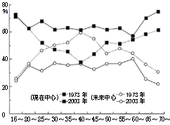

| 貧乏クジ世代 この時代に生まれて損をした!? (PHP新書) | |
| 香山リカ | |
| PHP研究所 (2005) | |
貧乏クジ世代
――この時代に生まれて損をした!?
香山リカ
５ 〝幻想の自分〟と〝現実の自分〟――悩んでいるのはその落差？
６ 世の中に向けられるべき視線がなぜ〝オカルト〟に向かうのか？
７ 「ケータイ以前」と「ケータイ以後」、どちらも知っているがゆえの葛藤
９ 「頑張っているとき以外は不安」――こんな状態から抜け出すには？
10 失敗や欠点ばかり探しても、〝ありのままの自分〟を好きになれるはずはない
11 〝自分らしさ〟を追うべきか、現実路線の〝ホリエモン流〟でいくべきか
12 自分を見つめるか見つめないか、彼らはなぜ二極化するのか？
第１章 哀しき「団塊ジュニア」、七〇年代生まれの現在
１ 「これまでよかったから、もういいことはない」
――未来志向になれない人びと
その若さで「人生をやり尽くした」と淡々と無気力な二十代、三十代の増加......。いったい彼らの〝燃え尽き感〟はどういうわけなのか。
◆楽しいことはすべて終わってしまった
清田友則氏という新進気鋭の評論家の著書『絶望論』（晶文社）に、こんな一節がある。清田氏は一九六二年生まれだから、これは数年前に書かれた文章のようだ。
著者は今年でとうとう「不惑」の歳を迎えるが、普通に生きればあとまだ人生の半分は残っているというのに、すでに人生をやり尽くした感が拭えないのはなにゆえだろうか？
「四十歳を前に〝人生をやり尽くした〟だって？」と疑問を感じる人もいるであろうが、私の診察室にやってくる二十代や三十代のなかにも、同じ言葉を口にする人が少なくない。
三十三歳のある男性。最近、急成長している金融関係の会社に勤めていた。結婚して子どもがひとり、結婚するときに両親の出してくれた頭金で買ったマンションももっている。だれもがうらやむような順調な生活だ。それが突然、「もう人生を終えてもいいかな」という思いにとりつかれ、「これって異常ですか？」とクリニックを訪れた。
「何か心配なこと、気がかりなこと、からだの不調などがあるのですか」
そう尋ねると、スーツをきちんと着こなしたその男性は笑顔でいった。
「いえ、何もありません。いまの仕事にも生活にも満足しているんです」
「そうなんですか。それなら人生を終える必要など、まったくないように思われますが」と私が問いかけると、彼は笑顔のまま首を横に振っていったのだ。
「逆です。何も問題がないいまだからこそ、これ以上、生きつづけるのをやめてもいいかな、って思うんです。この先、生きていてもこれよりもハッピーになる状況など、考えにくいですし」
それからいろいろ質問してみたが、自殺願望の原因としてもっとも多いうつ病の兆候も感じられない。深い悩みを隠しているようにも思えない。いったいこの男性の心のなかで何が起きているのか、とはかりかねて、月並みだがこんなことを聞いてみた。
「三十三歳といえば、一般的に考えてもまだまだこれから、というご年齢ですよね。この先、仕事でもプライベートでも新しいこと、楽しみなことがたくさんあると思うのですが」
すると彼は、「わかってないな」といった顔つきでため息をついた。
「新しい楽しみ、って何ですか？ テニス部に入って大学生活もエンジョイしましたし、長期の外国旅行にも行きました。結婚式、子どもの誕生、といった人生のハイライトも経験ずみです。仕事に関してはたしかにまだ未熟かもしれませんが、それでも大きなプロジェクトもいくつかやって海外出張も何度も経験したし......。
楽しいことはやり尽くしてもう思い残すことは何もない、という感じなんですよね。あとは年をとるだけで同じことのくりかえしでしょうし、五年先、十年先のことがよくイメージできないんですよ。まあ、とりあえず今年は息子の幼稚園受験があるから、それだけはクリアしたいな、と思っていますけれど」
要するに、彼は「楽しいことはすでに全部、終わってしまった」と考え、現在には満足を感じているが、未来のことは考えられない、といっているのだ。「すべてやり尽くした気がする」というこの〝やり尽くした感〟は、冒頭で述べた清田氏にも通じるものかもしれない。
◆消費欲を失った三十代
ＮＨＫ放送文化研究所が三十年間にわたって五年に一回、行なってきた調査『現代日本人の意識構造』（ＮＨＫブックス）には、どの世代でも人びとが「未来志向」から「現在志向」にシフトしていることがグラフにはっきり表われている（図参照）。
◎「現在志向」「未来志向」の年代推移（ＮＨＫ放送文化研究所調べ）

このグラフを見てもわかるように、一九七三年には十代から四十代にかけて、「未来中心」の目標をもつ層がどんどんふえている。この時代、この年代の人たちは節目を迎えるたびに「さあ就職だ、頑張ろう」「結婚していい家庭をつくるぞ」と未来に目を向け、夢を見てきたのだろう。そして、七三年の時点では「未来中心」の傾向は四十歳、まさに「不惑」を超えるあたりから減少しはじめ、五十代で「現在中心」が上回ることになる。
ところが、二〇〇三年の調査では「未来中心」も「現在中心」も世代で大きく変動することはなく、なおかつどの世代でも「現在中心」が「未来中心」を大幅に上回っている。
これは、どういう心理の反映なのだろうか。この調査を行なったＮＨＫ放送文化研究所は、こう分析する。
三〇年の間に社会的責任を担っている三〇代や四〇代にも経済的・時間的なゆとりが生まれ、また、それにともなって精神的な充足感を求める風潮も高まってきた。そのことが経済的価値を含む〈利〉の減少や、「身近な人たちと、なごやかな毎日を送る」という〈愛〉の増加につながっているのであろう。
この分析を見るかぎり、「未来中心」から「現在中心」へのシフトは必ずしも悪いことではなく、中堅世代にも生活や心にゆとりが生まれた結果だとされている。
しかしこのなかには、前述の男性のように「やるべきことはやり尽くしたから」、あるいは「楽しいことは終わってしまったから」という理由で未来に目が向けられず、やむをえず「現在中心」になっている人もいるのではないだろうか。
『絶望論』の著者の清田友則氏は、みずからの〝やり尽くした感〟を分析し、そこに「消費の意欲の低下」を見て取る。清田氏は、とくに男性は三十代半ばでマイホームを購入して「消費欲の最後の一花を咲かせたあと」は、「ただ『人生のたそがれ』を生きるだけ」とまでいう。清田氏の言葉を引用しよう。
今の老人世代は「金で買えないもの」の価値を信じることができた分、まだしも幸せである。救われないのはむしろ私たち以降の世代であって、これまでずっと買いたいものが買え、また実際に買ってきた我々にとって買いたいモノがみつからないというのは、たとえは悪いがアルツハイマー病を宣告されたようなものである。
「ほしいものはすべて手に入れた」「これから何がほしいのかわからない」と欲望を見失ってしまった人は、同時に「社会人」として「生きる糧」を失うことになる、という清田氏は、この段落をこんな予言めいた言葉で締めくくるのだ。
このこと（注・消費する人＝社会人として生きられる時間が短くなっているということ）は、我々の世代よりもはるかに消費主義の毒に汚染された若い世代が今後「不惑」に向かって歳を取っていくにつれ、よりいっそうはっきりとしていくことだろう。
そして、三十三歳にして「これ以上、生きてもしかたない。このあたりで生きることをやめてもいい」と淡々と述べる男性は、清田氏の予言が現実となりつつあることを物語っているのではないだろうか。
◆日本人が陥りやすい「ポスト・フェストゥム」的感覚
それにしても、いくら「もうほしいものがない」と消費の欲望を失ったからといって、人生の折り返し地点にも立っていないはずの三十代が、「人生の楽しいことはもうすべて終わってしまった」などと思うことがほんとうにあるのだろうか。
精神医学的には、ある特定の精神状態、具体的にはうつ病やうつ状態のとき、この「大事なことはもう終わった」という独特の感覚がやってくることが明らかになっている。精神病理学者の木村敏氏は、これを「祭り」をめぐる時間感覚にたとえて説明している。
祭りの楽しみが過ぎれば、当然のことながら「祭りのあと」がくる。
祭りの最中は熱狂していた人たちや町も、「祭りのあと」には倦怠感や虚脱感に包まれる、といわれる。映画『黒いオルフェ』の主人公オルフェは、カーニバルの翌日、亡くなった恋人ユーリディスの亡骸を抱えて高台に上る。そこから見下ろす町からは前日までの祝祭的な高揚はすでに消え去り、人びとは大量のゴミやガラクタを片づけながら、これから始まる日常に早くも倦んでいるように見える。文字どおり「祭りのあと」の光景が、恋人を失って途方に暮れるオルフェの心象風景とピタリと重なっている。
「祭りのあと」とは別に、「あとの祭り」という言葉もある。
辞書を開くと、「（祭りのすんだあとの山車、の意から）時機に遅れてどうにも仕様のないこと」という説明が記されている。
「祭りのあと」「あとの祭り」、いずれにしてもそこにあるのは、「もはや祭りではない」という失望、虚しさ、そして後悔とあきらめの感情だといえる。
木村氏の説によれば、精神の病のうちでも統合失調症の患者は、つねに「これから何かたいへんなことが始まるぞ」という「祭りの前」の時間を生きているという。また、器質性疾患の一つであるてんかんの患者は、「いま、まさに重要なことが起きている」という「祭りの最中」の時間を生きているという。
そして、「祭りのあと」を生きているのが、うつ病者なのだ。
木村氏によれば、うつ病で特徴的な「取り返しのつかないことになってしまった」という後悔の気持ちは、「すべては終わり、時間は止まっている」という時間の停滞の感覚とともに現われることも多いという。木村氏は、うつ病者に特有のこの時間感覚に、ラテン語で「祭りのあと」を意味する「ポスト・フェストゥム」という言葉をあてた。日本人には一般にこの「ポスト・フェストゥム」的な感覚に容易に陥りやすい人が多く、それが日本人の高いうつ病発生率とも関係している、と精神科医たちは考えている。
◆華やかで浮ついていた「あの時」
先に紹介した「ほしいものはもう何もない」「楽しいことは全部やり尽くしてしまった」という三十代の人たちの言葉にも、この「ポスト・フェストゥム」、つまり「祭りのあと」の感覚がひそんでいるのではないだろうか。
では、彼らはうつ病なのか。それは違うと思う。
うつ病者と「未来志向」になれない三十代の大きな違いは、後者の人たちはうつ病者のように「取り返しのつかない失敗をしてしまったから、未来に希望がもてない」といっているのではなく、逆に「過去がよかったからこそ、これ以上、いいことはない」「人生のピークで終わりにしたい」と思っているのだ。「祭りのあと」の虚脱感や悲哀感に耐えられないのではなく、どうせなら楽しい祭りの思い出があるうちに人生を終わりにしたい、という感覚だろうか。だから、「もうこれ以上、生きていたくない」といいながらも、苦悩や煩悶はなくどこか淡々としているのだろう。
そしてもう一つの違いは、うつ病者にとって「祭り」とは何だったのかはそれぞれによって異なるはずだが、三十代の人たちにとっての「祭り」はある程度の共通性をもっている
それはいうまでもなく、高度成長からバブル経済にかけての「好景気」である。彼らにとってはおそらく、「もう楽しいことはやり尽くした」「ああいう時はもう戻ってこない」というときの「楽しいこと」「ああいう時」は個人的な思い出であるとともに、華やかで浮ついていた時代の空気も指しているにちがいない。
◆苦悩はないが未来に希望もない
この「苦悩なきポスト・フェストゥム」という独特の感覚は、現在では三十代以外の世代にも広く見られる。
たとえば、二〇〇五年夏の総選挙のことを考えてみよう。
郵政民営化法案が参議院で否決され、衆議院の解散権を行使するという離れ業をやってのけた小泉純一郎首相は、解散時の記者会見でみずからを「それでも地球はまわる」と世の反対にあいながら真理を主張したガリレオ・ガリレイにたとえた。悲壮な決意がみなぎる顔はむしろ青ざめ、「クールビズ」の服装と同様、首相からは熱さではなく冷たさが伝わってきたが、国民のほうはその孤高の姿勢に熱狂し、文字どおり酔いしれた。
こうして日本は、選挙という「祭り」の熱狂に突入し、そして熱い祭りを締めくくるにふさわしい「自民党の歴史的大勝利」という印象的な結末で祭りは幕を閉じた。
そして二〇〇五年秋、日本全体が文字どおり「祭りのあと」の状態を迎えたのだ。
先に紹介した木村氏の説を応用すると、この時期、「祭りのあと」にいる日本人の多くが、「すべては終わった」「取り返しのつかないことになった」と「ポスト・フェストゥム」の感覚を味わっているということになる。
一部には「そのとおりだ」という声もある。選挙直後の『読売新聞』の世論調査では、六三パーセントが「首相が強引な手法をとる不安を感じる」と答えている。選挙結果に「日本国民は取り返しのつかない選択をした」と憂える評論家も少なくない。
とはいえ、その不安や憂いの声は一定以上、大きくなり、何かの行動に結びつく様子はない。週刊誌やワイドショーは当選した新人議員たちの私生活や過去をおもしろおかしく取り上げつづけてはいるが、そこに「取り返しのつかないことをしてしまった」というほどの切迫した危機感はない。見ている人たちも「へーえ、ずいぶん大きな家に住んでいるんだね」とじゃっかんの羨望、嫉妬は感じても、自分たちの選択に後悔や無力感を感じている様子はない。
では、〝小泉劇場〟の主役たる小泉首相自身はどうなのだろう。あまりの大勝のせいか、特別国会では表情に緊張感が感じられなかったともいわれたが、その後、勇壮なオペラ『タンホイザー』を鑑賞して「涙が出た」と話していたところをみると、高揚感はそれほど落ちていないようだ。
とはいっても小泉首相は、木村氏の提唱した別の時間感覚、いつも祭りの只中にいる「イントラ・フェストゥム」を生きているというわけでもない。選挙があったりオペラを見たりすれば「祭り」の時間に入り、終わればすぐに日常の時間へ、と簡単にスイッチングができるのかもしれない。このある種の〝軽さ〟は、「取り返しのつかないことをした」といつまでも自分を責めがちな従来の日本人には、あまり見られなかったものかもしれない。
「祭りのあと」にあっても、それほどの虚脱や後悔には陥らない。目に見えるような落胆や失望も味わわない。それだけを見ると、私たち日本人は「ようやく脱・うつ病の時代を迎えた」といえるかもしれない。しかし、深刻さが感じられないからといって問題がないかといえば決してそうではない。
三十代で「もう祭りは終わった。あとは生きていても意味がない」と静かに語る人たちのように、「苦悩なきポスト・フェストゥム世代」は今後、どうやって未来に希望をもって生きつづけていけばいいのか、という新たな課題を私たちは背負うことになったのだ。
ここで気になるのは、「もう生きている意味がない」という彼らは天涯孤独というわけではなく、妻や子ども、親や同僚などの家族や親しい仲間がおり、責任ある仕事に就いている、ということである。「生きるの、やめようかな」と気軽に口にしているように見える彼らは、自分の仕事や周りの人に対してどう思っているのだろう。
次に、彼らの他者感覚について考えてみたいと思う。
２ 「心の内を相手に伝えないこと」を「やさしさ」と考える男がふえている
「もう楽しいことはない」と無気力な男性にとって、愛すべき妻や恋人も結局は他人!? 男女間のコミュニケーション・ギャップは予想以上のようだ。
◆他人の気持ちを考えてもしかたない？
「これまでの人生、十分楽しかったし、これ以上、生きていたって同じことだと思うんですよね。このあたりで終わりにしてもいいかな、って」
次の休日の予定について話すように淡々とそう語る三十代ビジネスマンは、一見すると人生の悟りを開いた哲人のようで、思わず「そうですか」とうなずいてしまいそうになることもある。
しかし、そこでふと一つの疑問が頭をよぎる。この人は大学を出て、世間に名の通った会社に就職し、ローンがあるとはいえマイホームも手に入れている。さらに、結婚して子どもまでいる。この人が「自分の人生、終わりにしたい」というのはもしかすると究極の〝選択の自由〟なのかもしれないが、遺された妻や子ども、両親やきょうだい、友人たち、さらには中途半端なままの仕事はいったいどうなるのだろう。自分が勝手な選択をすることで、家族や仲間がそのあと長きにわたって苦しい思いをすることになる、と賢いこの男性が気づかないはずはない。そのあたりはどう考えているのか。
「あのー、人生に楽しいことは残っていない、というのはあくまであなたの意見ですよね。でも、あなたの奥さんやお子さんはそうは思っていないし、だいいちあなたが万が一いなくなってしまえば、ご家族の人生が暗転してしまうという可能性はないですか」
「そうでした、すっかり忘れていました！」と相手がショックを受けないよう、なるべく言葉を選びながら尋ねても、彼の表情はまったく変わらなかった。
「ああ、妻や子どもですか？ 妻の実家も結構、裕福だし、彼女、薬剤師の資格もあるんですよね。生活に困るってことはないんじゃないかな」
「いや、生活うんぬんということよりも前に、夫や父親が突然いなくなったらどんなに悲しくつらいか、ということですよ」と今度は少し生々しい言葉を使いながら、「家族の感情」について聞いてみたが、やはり答えは変わらなかった。
「うーん、妻や子どもがどう思うか、なんてわかりませんよ。自分じゃないんですからね、そこまで考えたってしかたないんじゃないですか。子どもにとって父親がいないのは何かと不利かもしれないけれど、まあ、それぞれの人生なんだから、としかいいようがないですよね」
家族とはいえ他人なのだから、相手が何を感じ何を考えているかは、結局のところわからない。これはある意味で真実だ。しかし、だからといって「相手の気持ちを考えなくていい、考えてもしかたない」ということにはならないのではないか。いや、その前に考えないようにしようとしても、自分が先立って妻や子どもが泣き暮れている光景がどうしても目に浮かぶのがふつうなのではないだろうか......。
◆男の言い分は「余計な心配をかけたくない」
それから先もなんとか、家族や友人の心の痛みを実感してもらおうと誘導してみたが、ソフトだが淡々とした口調や表情はついに変わらなかった。せめて「いいかげんにしてくださいよ！」と相手の怒りを引き出すことができれば、それは相手の〝心の地雷〟を踏んだというサインなので、そこから深い話にもっていくこともできる。ところが目の前の三十代ビジネスマンの場合は、いくら会話を続けても「さあ、そういわれても......」「よくわからないんですよねえ」と軽いビジネストークをしているような印象が変わらない。
もちろん、だからといって彼は、家族や友人のことなどどうでもいいと思っているわけではない。聞くと「もちろん自分はいろいろな人に支えられてここまできたと思うし、周りには感謝している」「妻は自分にはもったいないくらいの女性」などという。家族とも週末の外出、休暇の旅行など十分に時間を過ごしているようだ。給料も妻にそのまま渡して、自分は定額のこづかいで毎日をまかなっている。もちろん、浮気などもせずに〝妻一途〟、育児にも協力的だ。
にもかかわらず、少しでも相手の内面に踏み込むような話になると、「自分じゃないのだからよくわからない」ととたんに想像停止、思考停止に陥ってしまう。
おそらくこの男性に「あなたは家族を愛していますか」と尋ねれば、「はい、もちろんです」と答えるにちがいない。しかし、もし自分の夫が「やりたいことはやり尽くしたから」とさっさと人生に終止符を打ったとしたら、遺された妻や子はそれでも「愛されていた」などと思えるだろうか。なぜ彼は「給料も渡すし、暴力も浮気もないこと」が妻への「愛」だと思い、妻もそれを「愛されている」と感じているはず、と疑いもなく信じているのだろう。
「そもそも、あなたが〝人生を終わりにしたい〟などと考えていることを、奥さんは知っているのですか」
「いいえ」という答えを半ば予想しながら尋ねてみると、案の定、こんな言葉が返ってきた。
「まさか。妻にこんなこといったって、余計な心配かけちゃうだけですよ。話したってわからないでしょう。だから意味ありません」
妻に悩みごとを打ち明けて心配をかけたくないと配慮できる人が、「これ以上、生きていてももういいことはない」と勝手に人生からひとりフェイドアウトしようとする。これをはたして「やさしさ」と呼んでいいものなのだろうか。
◆黙っている男に女性は愛を感じていない
しかし、この種のやや奇妙にも見える「やさしさ」は、彼の世代に限ったものとばかりはいえないようだ。
高校の国語の教科書にも載っている夏目漱石の作品に、『こゝろ』がある。主人公の「私」は、かつて同じ女性を好きになった末に自殺した「Ｋ」への罪悪感を引きずりながら生きている。そして、「私」が私淑していた「先生」も、やはり自殺という方法で人生に終止符を打つ。
この作品はよく高校の研究授業でも使われるが、ある学校の生徒が書いたこんな感想文を目にしたことがある。抜粋して引用させてもらう。
主人公の「私」が友達「Ｋ」と同じ人を好きになり、しかもその友達に恋を相談されてしまうところなどは、現代にも通じるもので、理解しやすい部分であった。
しかし「精進」の道を進んだ挙げ句に自殺した「Ｋ」は、ある意味で男らしかったのかもしれない。
人のこころは、その人にしかわからないものである。
人のこころは勝手だったり、逆に他人を親切に思いやったり、様々に変わるものだが、結局、人生や恋愛には、こうすればいいという答えはないのだし、だから逆に人間はおもしろいのだと思った。
この生徒は男子のようだが、「人のこころは、その人にしかわからない」といい、「Ｋ」の選択を「ある意味で男らしい」と肯定している。
しかし、女性の場合は受け取り方が少し違う。近代文学研究者の小森陽一氏が対談のなかで、地方の女子高で『こゝろ』を取り上げたときの生徒たちの興味深い反応を教えてくれたことがあった（『漱石研究』第十八号、翰林書房）。
......教室開けた瞬間、脂粉のにおいがまずくる某女子高でもやってたんですよ。そこでは、「先生」は愛してる愛してるって言ってるけど、何で奥さんに黙って死んじゃうの、この人って。......「全然、愛してないでしょう」って、怒ってるの、女の子たちが。これもなかなか鋭いと思いました。
◆対話ができなくなった若いカップル
小森氏は、この『こゝろ』に登場する「Ｋ」や「先生」、あるいは作品を読んだ男子高校生たちと女性たちの違いをこう分析する。
それはやっぱり、日本の男たちの相手の人格を尊重するということのはき違いですね。それは多分、世代は分からないけど、その男の親たちの子どもを育てるときの、子どもの人格を尊重するということのはき違い。
つまり『こゝろ』の舞台になっている明治時代の男性も、一九八〇年代後半生まれのいまの高校生も、「自分の心の内を伝えないことが相手の人格を尊重すること」だと思っている。そして女性たちはいつの時代も、心の悩みも語ってくれない夫や恋人に「人格を尊重された、やさしくされた」とはまったく思っていないのだ。
とはいえ、男女雇用機会均等法が成立した一九八五年を中心とする前後十年くらいは、男女対等意識の高まりとともに男女間のコミュニケーションの重要性が強調され、夫婦や恋人が心のなかを打ち明けながら対話し合おうとした時期もあった。ちょうど一九八五年に日本で出版されて話題になった精神分析家ユルク・ヴィリィの『夫婦関係の精神分析』（法政大学出版局）の読者には、男性読者も結構多かったと聞いた。
ところがその後、いつのまにかまた、「やさしさとは相手にほんとうの気持ちをいわないこと」と思う男性がふえているのだろうか。カップル間のコミュニケーションについて真剣に考えようとするのは女性ばかりで、二〇〇四年に翻訳が出版された心理学者スティーヴン・ミッチェルの『愛の精神分析』（春秋社）の読者は、圧倒的に女性が多かったそうだ。
明治時代以来、続いていた「やさしさとは何も語らないこと」という価値観から抜け出て、一時は「女性と同じ目線の高さに立って率直に話し合おう」と決意したはずの男性たちは、なぜ九〇年代以降、ふたたび「自分の気持ちは自分にしかわからない」「何も告げないことが愛すること」という考えに転じてしまったのだろう。
このコミュニケーションに対するあきらめにも似た淡々とした冷めた姿勢が、ポスト・バブル世代、すなわち「貧乏クジ世代」の一つの特徴といえるかもしれない。
３ この時代に生まれて「いちばん割を食った」と思っているのはだれか？
一九七〇年代生まれの「団塊ジュニア」たちは一生、「オレたち貧乏クジを引かされた」と、わが身を呪いながら生きていくしかないのか？
◆おじさんは四十代から、おばさんは三十代から
セイコー（株）は、二〇〇四年に成人式を迎えた新成人男女五一六名を対象に、「時」の意識に関するアンケート調査を実施し、その結果を新聞紙上などで発表した。「時間が止まってほしいと思う瞬間は？」「二十四時間をお金で買うとすればいくら？」といったユニークな質問が並ぶなか、世間の関心が集まったのは「〝おじさん〟〝おばさん〟は何歳から？」という問いだった。
その結果によれば、若者たちにとっての〝おじさん〟は四十代から、〝おばさん〟は三十代から、ということになるらしい。
「えっ、三十歳を超えれば、もうおばさんだって!?」と意外に思う人も多いはずだが、コメント部分を見ても「三十になれば女の花は終わった」「父が老け出したのが三十五歳」などと、非常にシビアだ。「四十歳でも五十歳でも、心が若々しければ、まだ青年」などと思っているのは当人だけ、ということがわかる。
この調査結果は、人びとにどう受け止められたのだろうか。おそらくすでに四十代、五十代になっている世代は、私のように「たしかに自分はもう〝おねえさん〟ではないし」と思いながら、「それにしても若者は手厳しいな」と苦笑したのではないだろうか。
しかし、「あなたは〝おばさん〟」「もうすぐ〝おじさん〟」と、すぐ下の世代から突きつけられた二十代後半から三十代の人たちは、この結果をただ笑って見過ごすわけにはいかなかったようである。
◆バブル景気に間に合わなかった第二次ベビーブーマー
ネットサーフィンをしていたら、個人の日記サイトでこの結果を受けて、次のように語っている人がいた。引用の許諾をいただいていないので、ごく一部だけを抜粋して紹介したい。
昭和四十八年（一九七三年）生まれは〝不幸の世代〟です。
生まれたときにはオイルショック、ベビーブームで同世代は多く、進学、就職と節目には多くのライバルがいました。高校生のころに日本経済はバブル真っ盛り、期待を胸に必死で大学受験を耐えたものの、大学生になったころにはバブルがはじけていました。そして、三十歳を迎えたいま、昭和四十八年生まれの女性は〝おばさん〟という扱いを受けることになったのです。
ここで「ベビーブーム」という言葉があるが、これはもちろん、一九七〇年（昭和四十五年）から一九七五年（昭和五十年）ころまでの、いわゆる「第二次ベビーブーム期」のことを指す。この時期の出生数は、年間約二〇〇万人。これは、私が生まれた一九六〇年前後の年間約一六〇万人にくらべてもかなり多いが、二〇〇四年の出生数約一一〇万人にくらべると、じつに約二倍。いま世の中にいる子どもたちが突然、二倍にふえたら......と想像すると、その多さがなんとなく実感できる。
◎出生数の年次推移（厚生労働省「人口動態統計」より）
・１９４７（昭和22）......２６７８７９２人
・１９４８（昭和23）......２６８１６２４人
・１９４９（昭和24）......２６９６６３８人
・１９５０（昭和25）......２３３７５０７人
・１９７０（昭和45）......１９３４２３９人
・１９７１（昭和46）......２０００９７３人
・１９７２（昭和47）......２０３８６８２人
・１９７３（昭和48）......２０９１９８３人
・１９７４（昭和49）......２０２９９８９人
・１９７５（昭和50）......１９０１４４０人
・１９７６（昭和51）......１８３２６１７人
・１９７７（昭和52）......１７５５１００人
・１９７８（昭和53）......１７０８６４３人
・１９７９（昭和54）......１６４２５８０人
＊１９７２年以前は沖縄県を含まない
ところで、日本の「バブル景気」とはいったい、いつからいつまでを指すのだろう。経済学の分野では、それは正確には一九八六年（昭和六十一年）十一月から一九九一年（平成三年）二月までの五十一カ月続いた、ということになっている。先に紹介した自称・不幸の世代、昭和四十八年生まれの〝おばさん〟にとっては十三歳から十八歳ころまでがそれにあたる。これではたしかに、上の世代を見ながら「私も大学生や社会人になれば」と期待はしたものの、バブル景気を直接には味わわないうちに世間は大不況に突入してしまった、と〝不幸感〟を覚えてもしかたないかもしれない。
三十代のあるビジネスマンが、こう語るのを聞いたことがある。
「僕自身は、カッコいい大学生になるのを夢見て、まじめに受験勉強してきたんですよ。それなのに、社会人になったら目につくのは〝不良債権〟とか〝不良資産〟とか、〝不良〟って言葉ばかり。自分は不良にもならずにやってきたのに、周りが勝手に不良になっちゃった」
そして、彼はため息をつきながら、こうつぶやいたのだ。
「まったく僕たち、貧乏クジを引いちゃったようなものですよ。ぜんぜん〝おいしい思い〟もしていないのに、ここにきて〝将来は年金ももらえるかどうかもわからない〟でしょう？ どうせならもっと早く生まれてバブル景気に浮かれるか、もっとあとに生まれて、世の中の景気は悪いけれど、競争率の低い人生を歩むか、どっちかにしたかった......」
第二次ベビーブーマーたち。すなわち、二〇〇五年の現在、三十歳から三十五歳にあたる〝おばさん〟や〝おじさん予備軍〟たち。彼らはほんとうに、「不幸の世代」であり「貧乏クジ世代」なのだろうか。もしそうだとしたら、彼らは一生、「オレたち貧乏クジを引かされた」と、わが身を呪いながら生きていくしかないのだろうか。
◆知らないはずの大阪万博をイメージできる七〇年代生まれ
三年ほど前のことだ。大学で教えたゼミ生のＯＢ会に呼ばれ、出かけたことがある。
私のゼミはテーマはバラバラであったが、デザイン系の大学だったので、みな芸術やデザインが好きな学生たちだった。
集まった卒業生のうちのふたりが「太陽の塔」のミニチュア模型を「これよかったらどうぞ」と差し出してくれたことがあった。半ば廃墟と化している塔内部の特別見学会の抽選があったので、応募してみたがはずれた。でも悔しかったので、外からでも見ようとふたりで出かけたのだという。
「大阪万博のグッズが結構売られていて、楽しかったですよ」とふたりがさかんに話していると、ほかの卒業生たちも集まってきた。私は思わず、「大阪万博かぁ、なつかしいなぁ。みんなは何歳ごろだったの？」と聞いてしまった。すると彼らは一瞬、きょとんとした顔をしたあとで、笑いはじめた。
「いやだぁ、先生。大阪万博って一九七〇年でしょう。私たち、まだ生まれてないですよ」
よく考えてみれば、一九七八年から七九年にかけて生まれた彼らが大阪万博を記憶しているはずはない。「そうか、あなたたちは前の万博の記憶がない人たちなのね」と感慨をこめていうと、卒業生たちは「やめてくださいよ、いくつだと思ってるんですか！」と笑いつづけた。
「ごめん、ごめん」と謝りながら、ふと疑問が頭をよぎったので口に出してみた。
「でもさ、それならいったい、どうして太陽の塔の内部になんか入ってみたかったの？ だいたい、抽選に落ちたのに跡地まで行ってみる、ってどういうこと？」
すると、ひとりがいった。
「まあ、太陽の塔はデザイン的にもおもしろいし、前から興味あったんですけど、それよりも親たちの口から大阪万博はすごかった、と何度も聞かされるもので。アポロ11号の月の石だとか、ごったがえす会場とか、頭のなかでイメージができちゃってるんですよ。だからせめて近くまで行けば、そのイメージが確認できるかなー、と思ったんです。そこまではできませんでしたけれど」
ほかの人たちも、「わかる、わかる」とばかりにさかんにうなずいている。
「デザイン的におもしろい『太陽の塔』」という核さえあれば、彼らは大阪万博の話を実際に経験した人たちの口から聞くだけで、頭のなかでイメージをつくりあげることができるのだ。あたかも〝未経験の記憶〟のようで、私は彼らが語る「見たことのない大阪万博」の話をおもしろく聞いた。
二〇〇五年になってテレビの歌謡番組を見ていたら、その大阪万博のテーマソング『世界の国からこんにちは』を歌手の氷川きよしが歌っていた。一九七〇年当時は、〝国民的歌手〟といわれた三波春夫が歌った曲だ。
氷川きよしは、ルックスこそ三波春夫とはまったく違うものの、笑顔、声質、身ぶりなど、驚くほど当時の三波の歌唱を忠実に再現しながら、「こんにちは、こんにちは、握手をしよう」とくりかえすこのひたすら明るく前向きな曲を歌い上げた。
ふと「氷川きよしはこの歌を聞いて育ったのだろうか」と思ったが、彼は一九七七年生まれだ。「太陽の塔」グッズを買ってきてくれた卒業生たちと、ほぼ同世代である。当然のことながら、一九七〇年の万博は記憶していない。
しかし、とくに演歌歌手である彼のなかでは、「大先輩の万博ソング」という核を中心に、やはり〝イメージのなかの大阪万博〟ができあがっているのだろう。おそらく彼に「大阪万博ってどんな感じだったと思いますか？」と聞けば、音楽の話を中心に彼の頭のなかにできあがっているイメージを具体的に語ってくれるにちがいない。たとえリアルタイムで経験していなくても、あたかもそれを見聞きしたかのような〝疑似記憶〟をつくりあげる能力が人間にはあるのだろう。
◆「なんとなくなつかしい」疑似記憶
しかし、注意しなければならないのは、彼らにはいずれも「デザイン」「音楽」というはっきりした核があることだ。そして、その核と強く結びついたシンボルがあれば、それを手がかりにして、イメージなり疑似記憶なりをつくりあげていく。逆に考えれば、それほどの核がなければ、あるいは自分の核とマッチするようなシンボルやできごとがなければ、疑似記憶をつくりあげることは難しいだろう。
あるとき授業のなかで、学生たちにコラムニストの泉麻人氏が監修した『泉麻人の昭和ニュース劇場』というＤＶＤを見せたことがあった。これは、一九五六年（昭和三十一年）生まれの泉氏の記憶のなかにぼんやりと残っている、昭和三十年代の映画館で上映された短篇ニュースフィルムを年代ごとに並べてつくられたものだ。
「危険なプロレスごっこ」「女性の泥酔者にご注意」といった、日常生活のなかから拾ったどちらかといえばのんきなニュースが多いこの作品を見せると、多くの学生は「何これ？ おもしろくもなんともない」「同じ日本の話とは思えない」と無関心や拒絶反応を示した。たとえ、リアルな記憶になくても、両親や祖父母から聞いてできあがっている〝疑似記憶〟に照らし合わせて、「なんとなくなつかしい」とノスタルジーを覚える学生もいるのではないか、と期待したのだが、それはまったくいなかった。
おそらく、この当時の庶民の生活を切り取った「ニュース劇場」には、彼らの核と結びついた話題や現象がなかったのだ。
じつは泉氏は、この作品の前に『東京風景』というＤＶＤの監修も行なっているのだが、これは「東京ブギウギ １９４５～１９５５」「新しき庶民のパノラマワールド １９５６～１９６１」「オリンピックへ！ 東京大改造 １９６２～１９６４」ほか全五巻構成で、とくに最初の一巻は明らかに泉氏の生まれる前の映像を取り扱っている。これが泉氏自身の記憶と重なるはずはないのだが、時代や風俗がみずからの核になっている泉氏にとっては、たとえ生まれる前のことであっても「東京ブギウギ」は大切な〝疑似記憶〟の一部なのであろう。
このように、その人の核と重なるテーマや話題であれば、たとえそれが生まれる前の話であっても、映像を見たり年長の人に話を聞いたりするうちに、「あたかも体験したような」実感や「なんとなく覚えているような気がする」という〝疑似記憶〟を本人の脳や心につくりあげることが可能である。しかし、それが核と少しズレていれば、生まれる前や物心つく前のできごとは、あくまで「まったく知らないこと」になってしまうのだ。
◆見たはずなのに実感がない〝バブル〟の狂乱
ところで、先ほど「経験したことのない大阪万博」の話をしてくれた七八、七九年生まれの卒業生たちにとって、日本が経験した「バブル経済」はどう記憶されているのだろう。
彼らはバブルが破綻してから大学に入り、すっかり日本の景気が低迷しきったところで社会に出た。当然のように就職口はなく、じつはゼミ生の多くはいまだにフリーターである。「日本がバブルに浮かれていた」といわれる八〇年代中盤から後半にかけては、彼らは小学校高学年になっていたはずだ。
彼らのひとりは、いっていた。
「テレビでなんとなくジュリアナ東京のニュースとか、タクシーがぜんぜんつかまらない、とか見たような気もする。でも、それってほんとうに見たのかどうかも、覚えていない。私には関係ないことだったし」
デザインやイベントに興味のある彼女にとっては、経験していないはずの大阪万博のイメージのほうが、たしかにその目で見たはずのバブル景気のニュース映像よりもよほど鮮明であるようなのだ。
二〇〇五年に出版された話題作、林真理子氏の『アッコちゃんの時代』（新潮社）の冒頭には、主人公のアッコこと厚子が大学生時代、六本木で遊びながらロサンゼルス・オリンピックの話をするシーンが出てくる。この地でオリンピックが開催されたのは、一九八四年のことだ。
小説から引用しよう。
今年の一月、平均株価が一万円を越えたと皆が騒いでいた。世の中の景気がよくなったので、一万円札も、五千円札も、千円札も新しくなるらしい。男たちはその前に、古い札を使いきってしまいたいようだ。
そして、男たちはフリーチケットで入ったディスコのＶＩＰ席に陣取るアッコたち女子大生とこういう会話を交わすのだ。
「アッコちゃん、今夜は何が食べたい」
「瀬里奈でしゃぶしゃぶ」
「クイーン・アリスへ行きたいなあ」
「西麻布の〝さぶ〟がいい」
いずれも、当時の価格でひとり二万円以上はかかる高級レストランや割烹の名前である。コンパの会場にひとり二五〇〇円のコースのある居酒屋を選んで、それに一〇〇〇円の飲み放題をつけるかつけないかを真剣に悩むいまどきの学生には、想像もつかないような贅沢な話だろう。
おそらく、七〇年代生まれで「バブルの話はなんとなく覚えている」という若者たちにさえ、「女子大生が六本木や渋谷を遊び歩き、おとなたちのお金で何万円もするレストランに入っていた」という話は、とても実感をともなった記憶としては残っていないはずだ。
大阪万博の話なら、経験はしていないが、ある程度のリアリティをともなって語ることができる。ところが、バブル景気の話となると、うっすらと記憶はありながらも、とてもリアリティを感じることはできない。
この「大阪万博」というところを「ゴジラ映画」「スーパーカーブーム」「ジャイアンツの９連覇」などと入れ替えるなど、多くの七〇年代生まれの若者には「記憶にはないが熱心に語れる何か」があるはずだ。しかし、「バブル景気」については、ニュースなどでその記憶がいくら鮮明にあったとしても、その当時、せいぜい大学生、ましてやビジネスマンではないので、それを熱心に語れる人は少ない。
覚えているはずなのに、実感がない。まして、その恩恵を受けたことはまったくない。テレビのニュースで見たあれは、いったい何だったのか。たしかにこの目で、ディスコで踊り狂う女性や高級外車を乗りまわすビジネスマンなどを見たはずなのだが、それが本物だったのか夢だったのかも、定かではない。少なくとも、大学に入ったころにはそれはもう、ほとんど終わりかけていた。
七〇年代生まれの人にとって、バブル景気はまさに「見たはずなのに覚えていない何か」なのである。彼らが、「自分たちっていったい何なんだ？」と割を食った感じ、もっといったい何なんだ？」と割を食った感じ、もっといえば貧乏クジを引いた感じを抱いたとしても、それは当然なのではないだろうか。
４ 〝カラダだけの三十歳〟と〝ココロは三十歳〟
――団塊の世代と団塊ジュニア
二つのベビーブーマー――熾烈な競争を生き抜いてきた似た者どうしだが、両者の人生観、社会観には大きな違いがある。
◆自分たちは〝不幸な世代〟、彼らは〝ズルい世代〟
ところで、ほかの世代からは「いや、私たちこそ貧乏クジだよ」という声は聞こえてこないのか。また、〝貧乏クジ世代〟たちが「バブルを味わった〝ズルい世代〟」と名指す、いまの三十代後半から四十代にあたる世代は、二十代後半から三十代前半までの〝不幸な後輩〟たちと、どうコミュニケーションをはかればよいのだろう。
じつは私自身は、その〝ズルい世代〟の上限に属している。就職の時期はバブル前夜、たしかにいまのように〝就活難民〟が世の中にあふれていたという印象もないが、なんといっても男女雇用機会均等法ができるかできないかだったので、景気うんぬんよりも男女不平等に悩まされていた記憶がある。医学部の学生にさえ、「女性研修医はお断り」と、門戸を閉ざす病院や教室があったのだ。そして、実際のバブル景気のころは私の同級生たちは社会人になってまもなく、まだ接待をしたり、されたりする地位にもなかった。
個人的な話をすれば、私は医師になった直後だったので、週末はいつも当直を割りふられて狭い当直室で寝泊まりし、「バブルっていったいどこの世界の話？」と好景気をかえって恨めしく思っていた。いまの三十歳前後からすれば、それでも「景気のいい社会で息をしていただけズルい」ということになるのだろうが、恩恵を受けたのは、じつは一部の人たちだけだったかもしれないのだ。
このように、たとえば「もっとも気楽」といわれる私の世代でも、心のなかで「貧乏クジを引いた」「ほかの世代の人たちは恵まれている」という実感をもっている人は、じつは少なくないのではないかと思われる。ほかの世代として生きなおして比較できないかぎり、この実感を訂正するのは困難だ。
しかし、どの世代の人たちもひそかに、「私たちがいちばん割を食った」と思っているかぎり、世代間の円滑なコミュニケーションや協力など、はかれるはずもない。
「私の世代は恵まれていますよ。それにくらべれば、いまの人たちはたいへんだ」「いや、先輩たちのころは女性差別もあって、それなりに苦労したでしょう。私たちはその点では幸せでした」と、お互い〝不幸自慢〟をやめることからしか、すべては始まらない。
では、どの世代がその先陣を切ればいいのか。私はまず団塊の世代にそれを期待したいのである。
◆世間から冷たい視線を浴びる〝団塊の世代〟
「団塊の世代」という言葉はだれもが知っていても、じつはいま何歳の人たちがそう呼ばれるのか、よくわかっていない人が多いのではないか。この言葉の生みの親は、作家の堺屋太一氏。経済評論家でもあり、小渕・森内閣では経済企画庁長官まで務めた堺屋氏は、一九七六年に、その名も『団塊の世代』（講談社、現在は文春文庫）という本を出したのだ。
その本のなかには、こう書かれている。
日本民族は終戦直後の一九四七年から一九四九年にかけて、空前絶後の大増殖を行った。この三年間に生まれた日本人は、その直前よりも二〇％、直後よりも二六％も多いのである。
つまり、いわゆる第一次ベビーブームに生まれた人たちなのだが、人によってはもう少し広く幅をとり、一九四六年から一九五〇年ころまでに生まれた人たちを「団塊の世代」と定義することもあるようだ。広義のほうをとるとして、二〇〇五年のいま、彼らは五十五歳から五十九歳。企業によっては定年間近な人たちだ。
ところが、堺屋氏の著作が世に出たころは、彼らは二十六歳から三十歳。ちょうどいまの「団塊ジュニア」に相当する人たちとほぼ同年齢だったわけである。しかし「団塊の世代」のイメージは、当時もいまもかなり違う。
団塊の世代について分析された〝団塊本〟はいくらでも出ているのだが、そのうちのいくつかをパラパラめくっただけでも、「とにかく自意識が強い」「自分たちのことを語りたがる」「権力志向も強いが理想も高い」「社会問題に対してつねに一家言ある」「形だけでも自由・民主主義を愛しているフリをする」「おかしなくらいマイホーム主義にこだわる」などなど、とにかく手厳しい。
その前後の世代にくらべて突出して数が多く、受験や就職でもそうとう苦労したはずであるのに、だれも「彼らはかわいそう」「貧乏クジを引いた世代」などと同情的に語ろうとはしないのだ。
◆じつは正反対な〝第一次〟と〝第二次〟ベビーブーマー
これは個人的な感想でしかないのだが、おそらく堺屋氏の『団塊の世代』が発表された当時、そのころの二十六歳から三十歳というのは、感覚的には現在の三十代中盤から後半あたりに相当する〝未熟とはいえ一人前のおとな〟として認識されていたのではないだろうか。
一九七五年の国勢調査を見ると、そのころ二十五歳から二十九歳の男性は、五割強がすでに結婚していたことがわかる。つまり、「団塊の世代」と名指しされた彼らの過半数は、すでに家庭人であり社会人であったのだ。そして、彼らに対する世間のイメージは、「まだ若い心を残したおとな」のまま固着したような気がする。
◎25～29歳の婚姻状況（総務省統計局発表「国勢調査」より）
［注］実数（人）...（一）総数、（二）未婚、（三）有配偶、（四）死別、（五）離別>
◇１９７５年（昭和50年）......第１次ベビーブーマーに相当
25～29歳 男性
（一）５４２６２８９、（二）２６１９４５５、（三）２７７６４６４、（四）２７２５、（五）２４６９５
25～29歳 女性
（一）５３６８２９４、（二）１１２２５６９、（三）４１７５８３６、（四）１１５０６、（五）５７４８３
◇２０００年（平成12年）......第２次ベビーブーマーに相当
25～29歳 男性
（一）４９６５２７７、（二）３４４３０１５、（三）１４７０６９６、（四）１６１３、（五）４８５２２
25～29歳 女性
（一）４８２５０３２、（二）２６０３５７１、（三）２０９９４２８、（四）３９３５、（五）１１４５２７
［注］配偶関係別割合（％）...（一）未婚、（二）有配偶、（三）死別、（四）離別>
◇１９７５年（昭和50年）......第１次ベビーブーマーに相当
25～29歳 男性
（一）４８・３、（二）５１・２、（三）０・１、（四）０・５
25～29歳 女性
（一）２０・９、（二）７７・８、（三）０・２、（四）１・１
◇２０００年（平成12年）......第２次ベビーブーマーに相当
25～29歳 男性
（一）６９・３、（二）２９・６、（三）０・０、（四）１・０
25～29歳 女性
（一）５４・０、（二）４３・５、（三）０・１、（四）２・４
＊総数には配偶関係が不詳の人も含む
最近、こんな経験をした。若い編集者に「大学生と就職」について取材を受けたのだが、彼は当然のようにいったのだ。
「いまの大学生の親といえば、ちょうど〝団塊の世代〟にあたると思うのですが、親たちの就職観はどうですか？」
私は驚いて訂正した。「何いってるんですか。四十代半ばの私が、ちょうどいまの大学生の親世代にあたるんですよ」。すると彼は、「え、カヤマさんって団塊の世代......のはずはないか」と沈黙してしまったのだ。
これは私が六十歳に見えたという意味ではなくて、彼らの頭のなかでも、実物ではなくイメージとしての団塊の世代は、せいぜい大学生くらいの子どもをもつおとな、というあたりで成長を止めてしまったということではないか。そして、「団塊の世代はむかしもいまも成熟しきれないおとな」という錯覚にも似た感覚は、多くの一般の人たちのなかに、そして当の団塊の世代の人たちにおいても、どこかに残っているのではないだろうか。
そういう団塊の男たちのなかには、いまでも熱い口調で、自分について、あるいは社会や文化について語ろうとする人が少なくない。「たいへんな時代に生まれさせられたよ」と被害者意識を感じさせる発言をすることはあるが、「東京オリンピック、大学紛争......激動の時代を生き抜いてきたんだ」というプライドも見え隠れする。第二次ベビーブーマーを含む一九七〇年代生まれの人たちのように、「オレたちは貧乏クジを引かされた」とひたすらボヤいたり、意気消沈していたりするわけではない。
「ラクじゃなかった」と思いながらも、「でも頑張ってきた。これでよかったんだ」と自己肯定感だけは捨てていない、〝ココロは三十歳〟団塊の世代。そして、「ラクじゃなかった」という思いから、「できるなら別の時代に生まれたかった」と自己否定に陥りがちな〝カラダだけの三十歳〟第二次ベビーブーマー、いわゆる貧乏クジ世代。彼らは一見、似ているようだが、その心の内は、じつはまったく反対なのである。
◆理想主義や熱さからも学ぶべきことはある!?
そしていま多くの組織で、団塊の世代は定年を間近に会社の重要ポストを占め、貧乏クジ世代はその下で実働部隊として働く、という構図ができあがっている。人間は、「自分と似ていて少しだけ違うもの」に対してもっとも理解や共感を寄せることが難しい、ともいわれる。団塊の世代と貧乏クジ世代とのあいだに大きなコミュニケーション・ギャップが生まれるのも、当然なのかもしれない。
しかしこのコミュニケーション・ギャップは、世代間で生じているだけではない。最近、団塊の世代の夫と、同じ世代の妻とのすれ違いの問題について取り上げた本や雑誌の記事がよく目につく。
団塊の世代についてのルポ「さめない微熱につつまれて」を連載していた『週刊朝日』は、団塊の男女は〝友だち夫婦〟をめざして結婚し、妻はいまだにその夢を失っていないにもかかわらず、夫はすっかり組織の人間になってしまったことが原因の一つだとしている。
口では「これからは男女平等だよ」と滔々と語るのに、家に帰れば妻に「オイ、お茶」。そんな生活のなかで、「いつでも離婚して、人生をやりなおしてやる」という「リセット可能妄想」にとりつかれている妻も多い、というエッセイストの山口文憲氏のコメントも紹介されている。
下の世代からも妻たちからも、「あの人はわかっていない」「いっていることとやっていることがぜんぜん違う」と冷たい目で見られている団塊の世代。激動の時代を生き抜き、一時は「社会を変えるぞ！」という理想に燃えたが夢破れ、組織のなかで一生懸命に働いてきたはずの彼らが、ここにきて社会のお荷物扱いされているのは、なんとも気の毒だ。
だが、彼ら自身は「オレたちは損をした」とそれほど感じておらず、同情されたり、哀れみの目で見られるのも嫌い。そこがまた、「カワイげがない」という評価に結びついてしまう。
ただ若い人たちも、彼らのときとして方向違いの理想主義や熱さ、あるいはボヤキがボヤキにならず自慢になってしまう単純な自己愛から、学ぶべきところもあるのではないだろうか。議論はいつでも実りある結論にいたる必要はなく、ときとしてムダな議論、結論の出ない話し合いも経験してみるべきだ。
「部長、僭越ですがごちそうさせていただきますから、今日は飲みにいきませんか？」と、一度、自分から団塊の世代の上司を誘い、彼らの自分や社会への思い入れの源泉はどこにあるのか、じっくり観察してみてはどうだろう。貧乏クジ世代にとって団塊の世代こそが、教師であり反面教師でもあるのだ。
第２章 「貧乏クジ世代」の法則
５ 〝幻想の自分〟と〝現実の自分〟――悩んでいるのはその落差？
「自分を適切に相対化できる」のは貧乏クジ世代の強みでもあるが、一方では「視線の没社会化」も招いている。
◆劣等感や敗北感に苛まれ屈折していた三十歳前後
人を規定するのは、「世代」なのか、「年齢」なのか、という議論がある。
たとえば、本書で問題にしている貧乏クジ世代特有の特徴は、彼らがその世代だからではなくて、もっとシンプルに、いま三十歳前後だから目立っているだけなのではないか。つまり、いつの時代もその年代の人たちが示しがちな行動パターンや価値観を、彼らもまたもっているというだけなのではないか。そう考える人もいるだろう。
よいサンプルではないかもしれないが、自分はどうだったろう、とふりかえる。私の場合、三十歳前後というのは、〝ミクロからマクロへ、〈私〉から〈公〉へ〟と心が大きく揺れ動いた時期だった。私事になってしまうが、少しだけ語らせてもらおう。
医学生時代、東京でサブカル系雑誌の編集者やライターのまねごとをしていた私は、大学を卒業すると同時に、郷里の北海道に戻り、そこの大学病院で研修医になった。「少しはまじめに臨床や精神分析学の研究に取り組もう」と思ったからだ。
しかし、意に反して研修医生活は過酷で、とても勉強どころではなかった。また、私がいた大学の医局は『白い巨塔』のようなところではなかったが、それでも、一研修医が自分の好きな研究を自由にやらせてもらえる空気はなかった。先輩のもとで「シェーグレン症候群における脳神経症状について」といったレポートをまとめながら、「私がやりたいのは精神分析なのに......」と焦りを感じていた。
そのうち、かつての同級生や学会で知り合った医師たちは、次々に立派な論文をまとめ、それらが掲載された医学雑誌が届いた。雑誌時代の友だちも、次々と単行本デビュー。理系研究者の場合、二十代で頭角を現わせない人は才能ナシ、という声も聞こえてくる......。二十代後半の私は、地域の病院での医療活動に充実感を覚えながらも、劣等感や敗北感に苛まれ、活躍を始めた友人に嫉妬を覚えながら、ほんとうに荒んだ気持ちで生活していた。
◆嫉妬の心を吹き飛ばす社会的大事件や世界的戦争
しかし、二十八歳から二十九歳にかけて、個人の殻にこもってはいられないような大事件が起きた。宮崎勤による埼玉の幼女連続殺人事件だ（一九八八～八九年）。マンガ、ゲームセンターなど、サブカルのど真ん中で学生時代を送っていた私は、大きな衝撃を受け、いっせいに始まった〝オタク・バッシング〟に対して何かを発言しなければ、という使命感にかられた。そして、学生時代の知人とともに、雑誌や単行本に「オタク擁護論」を書きはじめたのだ。
そうこうするうち三十歳になると、今度は湾岸戦争が起きた（一九九〇～九一年）。世界ではじめてのハイテク戦争。力にものをいわせたイラクのクウェート侵攻。私はまた、何かを発言せずにはいられないと、診療を終えたあと、執筆活動にのめり込むようになっていった。事件や戦争によって、自分の内へ内へ、と向いていた視線がいきなり外に引き戻され、気がついてみたら、敗北感や嫉妬もどこかに吹き飛んでいたのだ。
このたった一つのサンプルから何かの結論を引き出す気はないが、それでも「屈折した心理はいつの時代も三十歳前後ではよく見られる」ということはいえるかもしれない。しかもその屈折は、自分と他者とをごく表面的な次元で比較することによって生まれるのだ。
「人は人、自分は自分」「見た目は成功している人も、心まで幸福かどうかはわからない」などと悠長なことをいえるようになるのは、もっとずっとあとになってから。三十歳前後の人が、ちょっとしたことで他人と自分とをくらべて嫉妬したり、他人からいわれたひと言が胸に突き刺さったりしても、「僕って小人物だ」と恥じることはない。
しかし、問題はその先だ。私が三十歳前後を過ごしたのは、いわゆる〝バブル崩壊前夜〟なのだが、私自身、地方の町の多忙な医療者だったので、じつはバブルのピークも崩壊も、直接的には関係がなかった。それよりも私を内面への視線から救ってくれたのは、社会的な大事件や世界的な戦争だったのだ。
内向きの悩みそのものは解決したわけではなかったのだが、「こんなことでグジグジ悩んじゃいられない！」という思いが、嫉妬や劣等感を見えなくしてくれていたのである。それは、なにも私に限ったことではなく、高度成長時代に恵まれた子ども時代を送った同世代の作家たちも、湾岸戦争反対署名を行なったり、宮崎裁判の法廷で証言したりするなど外へと視線を動かしていた。
◆〝等身大〟のマニュアル本や自己啓発系の本ばかり
いまはどうなのだろう。国内にも世界にも、問題は山積み。むしろ私の時代以上に、大きな事件や戦争が次々に起きる。しかし、貧乏クジ世代の人たちは、内面化しがちなこの年齢特有の視線を、なかなか外向きに変えられずにいるように見える。
書店に行っても、その世代向けに書かれた本の多くが、「社会をこう読む」ではなくて、「上司とはこう話す」「彼女にはこう接する」といった、あまりといえばあまりに〝等身大〟なマニュアル本。あるいは、いわゆる自分探し系、自己啓発系の本。視線はさらに足下に、もしくは心のなかにと向きつつあるようだ。
これはいったいどうしてなのか。私が三十歳だったころのように、彼らは「こうしちゃいられん！」などとそう単純には立ち上がらないということか。そうやって立ち上がっては結局、社会をよくすることができなかった〝先輩〟たちを、あまりにもたくさん見すぎたということか。いずれも理由の一つだとは思うが、もうちょっと別の原因もありそうだ。
彼らは、二十代のころからインターネット、携帯電話などを通して、私の世代とはくらべものにならないほどの情報に接している。おびただしい情報のなかで彼らは、「自分ってこんなもの」だと、世間の座標軸に自分の位置をスポッティングする（定める）ことが、あらかじめできてしまっているのではないか。
だから、「あいつ、上司に好かれていいな」「あんなきれいな彼女がいてズルいよ」と〝等身大〟のレベルではそれなりに嫉妬することはあっても、私がそうだったように「すごい研究者になれるかもしれなかったのに、このままでは後れをとってしまう！」といった〝幻想の自分〟と〝現実の自分〟との落差に焦ったり失望したりすることは、意外に少ないのではないだろうか。
〝幻想の自分〟に向かってしまった視線は、いったん外に転じれば、今度は現実とは直接、関係のない社会や世界まで届くそれなりのパワーをもっている。ところが、「あいつには彼女がいるのに、オレにいないのはおかしいよ」といった身近な嫉妬や自分への疑問だと、もしそれが外に転じたところで、それほど遠くへは届かない。
もちろん、「自分を適切に相対化できる」のは貧乏クジ世代の強みでもあるのだが、それが一方では、「視線の没社会化」を招いているのだ。
６ 世の中に向けられるべき視線がなぜ〝オカルト〟に向かうのか？
神秘的世界から現実社会に戻っても、バブル崩壊後、貧乏クジ世代だけは取り残されたのではないか？
◆なぜ「血液型性格判断」に貧乏クジ世代は群がるのか
「血液型と性格」をテーマにしたテレビ番組が、二〇〇四年十月だけでも六本あったという。「Ａ型は几帳面」「Ｂ型はマイペース」といった血液型による性格分類は、一九三〇年代から約十年周期でブームになっている。今回は八回目あたりのブーム、ということになるのだろうか。
医学者や心理学者の多くは、血液型によって性格が決まるというこの考えに、異議を唱えている。血液型が体質や性格などにまで影響を与えるという理論には、科学的根拠が乏しいのに加え、「性格は遺伝的に決まっている」（蛇足だが、血液型は単純な遺伝の法則によって決定されている）という発想は、人の選別や差別にもつながりかねないからだ。学生に聞いたところ、実際に「バイト先の店長は、ＡＢ型の人は採用しないといっていた」などの実例もいくつか出てきた。
ではなぜ、信憑性に乏しく危険性さえともなう血液型特集が次々に組まれるのか。それはもちろん、その手の番組は視聴率がとれるからだ。しかも、消費の中心といわれる二十代後半から三十代前半の人たちに非常に人気がある、と知人のテレビ関係者は話してくれた。占星術や心霊術と心理学をミックスしたような「スピリチュアル・カウンセリング」の番組も大人気だそうだ。つまり、本書で話題にしている一九七〇年代生まれの人たちが、この手の診断番組、ご託宣番組に群がっているということだ。
「自分たちはなんだか損をしている」という〝貧乏クジ感〟が強い彼らは、「こんなはずじゃなかった」という被害者意識、不当な扱いを受けているという思いをつねにもっている。そして、その責任や理由を社会に向けるのではなく、「上司」や「家族」といった身近な他者や自分の内面に向けようとする、いわゆる〝内向き志向〟の人たちが多い。
しかし、いくら家族と自分との関係を考えてみても、現在の不満や不安を「これだ」と説明できる原因が見当たらないこともある。あるいは、「親が私を愛してくれなかったから、自分の能力を発揮できない人間になってしまったのだ」と気づいたところで、次に襲ってくるのは「過去は取り戻せない」という虚しさにすぎない。
◆〝内向き志向〟とともにもつ〝超越志向〟の思考パターン
「内に目を向けてもしかたない」と気づいたとき、本来ならば、人は視線を社会に向ける。これはたんなる比喩ではなく、カウンセリングの際にも、「クライアントが視線を右下に向けたときは自分の内面、左下に向けたときは過去、上方に向けたときは未来について、それぞれ思いを馳せている」と、実際の視線の向きから心を推測することもある。つまり、下ばかり向いて「どうしてオレだけが」「しょせん私なんて」とボヤいていた人もいつか視線を上げ、社会や未来に解決を求めるときがくる、ということだ。
ところが貧乏クジ世代の場合、どうもその視線がいきなり現実の未来や社会を越えて、霊的世界や運命的世界にまで飛んでしまうことがあるようなのだ。「私がツイていないのは守護霊がよくないから」「今年は私みたいな水星人は最悪の運勢らしい」「オレはＡＢ型だから対人関係がうまくいかないのはしかたない」。こうやって、「うまくいかないのは家族や周りの人のせい」から、「社会のせい」を飛び越えて、いきなり「霊や宿命のせい」と結論づける。〝内向き志向〟と並んで、貧乏クジ世代の思考パターンにはこの〝超越志向〟もあるようだ。
考えてみれば、彼らが生まれた一九七〇年代は、七三年のホラー映画『エクソシスト』の公開や『ノストラダムスの大予言』（祥伝社）の出版、ＵＦＯや宇宙人の大ブームなど、オカルトや超常現象への人びとの関心が一気に高まった時代でもあった。
しかし、このころは高度成長に支えられ、「私にも未知なる超能力があるかもしれない」「いつかＵＦＯに乗れる日がくるかもしれない」と、人びとはそこに自分たちの新しい可能性や未来を見つけようとしていた感がある。そして貧乏クジ世代は、七九年に創刊されたオカルト雑誌『ムー』（学習研究社）を眺めたり、「口裂け女」のウワサを聞いたりしながら、子ども時代を過ごすことになったのである。
◆不運の原因ばかり求めたがる
おとなたちは、高度成長時代からバブル期に続く好調ニッポンのなかで、さらに自分を肯定的にとらえるためにオカルトを利用し、バブルがはじけると「やっぱり奇跡なんか起きないじゃないか」と現実に戻った。また、そのころ明るみに出たオウム真理教事件（一九九五年）も、私たちに神秘的世界や超常現象に接近しすぎることの危険性を痛感させた。
ところが、貧乏クジ世代はここでも〝取り残されて〟しまったのである。子ども時代にさんざん、目に見える世界だけが現実とはかぎらない、科学はすべてを解明してはくれない、と聞かされ、すっかりそう思い込んでいたところに、「それは危険な考えだ」といきなり否定される。それでは、と現実に着地しようにも、景気はすっかり悪くなっており、職もない。いまさら社会に目を向け、自分たちの力でそれを変えようにも、どうしていいかわからない......。そんな宙吊り状態の貧乏クジ世代が、「血液型性格判断」や「スピリチュアル・カウンセリング」にすがりたくなるのも、無理はないのかもしれない。
しかし、以前のブームのときのように、彼らはそれを、自分を肯定するために使うことができない。「そうか、これまでは発揮できなかったけれど、みずがめ座の私には抜群の知性が備わっているんだ」とは考えず、「彼女から冷たい、っていわれるのは、オレが冷酷なみずがめ座だからだ」と、もっぱら悪い状況や欠点を自分で納得するために使ってしまう。
「それもなんだかおまじないみたい」といわれるかもしれないが、カウンセリングの理論から一つアドバイスしよう。
視線が下を向くとき、思考も内面や過去に向かっている、と先ほど述べた。この法則は、ある程度、逆にして使うこともできる。つまり、視線を真正面からやや上方に向ければ、人は自然に、近未来の自分や社会に思いを馳せやすくなるのだ。
下ばかり見ていたと思ったら、いきなり〝遠い目〟をして「守護霊」「前世」にまで不運の原因を求めがちな貧乏クジ世代は、意識して「真正面より少し上」を見るようにしてはどうだろう。そして、「科学が証明できないものはすべてウソ」という気はないが、星占いや血液型診断にばかり頼るのはやめて、なるべく現実のなかで問題を解決するクセをつけられるよう、思考パターンを変えてみてはどうだろう。
まずは、コンパで血液型の話抜きで女性を楽しませられるよう、話題を用意してみること。このあたりから始めてみることをおすすめしたい。
７ 「ケータイ以前」と「ケータイ以後」、どちらも知っているがゆえの葛藤
自由にメールを使いこなしているようでも、子どものころにはまだ携帯電話が存在しなかった七〇年代生まれにとっては微妙なツールなのだ。
◆物心ついたときにはまだなかった携帯電話
喫茶店に「インベーダーゲーム」（スペースインベーダー）が登場したのが一九七八年。家庭用ゲーム機器、いわゆる「ファミコン」（ファミリーコンピュータ）が発売されたのが一九八三年。
一九七〇年代生まれにとって、テレビゲームは「物心ついたときからすぐそばにあったもの」の一つであろう。
しかし、いくら臨場感あふれるゲームとはいえ、モニターの向こうに実際に対戦相手がいるわけではない。『ドラゴンクエスト』や『ファイナルファンタジー』などのロールプレイングゲームで〝パーティ〟と呼ばれる仲間をつくっても、それはしょせんバーチャルな世界での疑似的な仲間でしかないことを、プレイヤーの少年少女は知っていたはずだ。
人は、どんなに迫真の映像や物語を与えられても満足できず、どうしてもその向こうにいる〝リアルなだれか〟とのコミュニケーションを求めてしまうようである。一九八〇年代半ばになって始まった「伝言ダイヤルサービス」は、あっというまに「だれか私に会ってくれる人いませんか？」という友だち探し、出会い探しのツールになった。
そして九〇年代に入り、ビジネスマン用に開発されたディスプレイつきのポケベルが、高校生に爆発的に普及。まだ文字の伝達は不可能だったが、少女たちが中心になって、数字をアルファベットやひらがなに置き換える〝暗号コード〟が開発され、「いまどこ？」「駅前に七時」といったメッセージが、〝いつでもどこでも〟交わせるようになったのである。
いまどきの若者はコミュニケーションが苦手、といわれて久しいが、「知らない人と知り合いたい」「知っている人とはもっと話したい」という彼らの涙ぐましいまでの努力の跡を見ると、若い人はいつの時代も、本質的にはコミュニケーションを求めていることを思い知らされる。
一九九五年、パソコンの基本ＯＳ「ウィンドウズ95」が発売され、それまでマニアのものだったパソコンやインターネットが、急に日常に近づいてきた。そこでの主役も、やはり若者。そして、「知らないだれかと掲示板などを通じてやりとりしたい」「知っている相手とはメールなどでもっと濃密な会話を」という二段構えのコミュニケーション欲求の原則は、ネットの世界でも生きていたのである。
さらに一九九九年には、ポケベルに代わるコミュニケーション機器として普及しはじめていた携帯電話に「ｉモード」機能（ＮＴＴドコモ）がつき、時間や状況に気がねなく相手にメールを送って、必要な用件や気持ちを自由に伝えることができるようになった。
ところがポケベル以降、つまりネットと携帯電話は、七〇年代生まれにとっては「物心ついたときからあるツール」ではないはずだ。七五年生まれの人であれば、ネットやケータイを使うようになったのは大学生になってからだと思われる。
◆〝メールの顔〟と〝リアルな顔〟のどちらが本物の自分なのか？
だれかとコミュニケーションする場合、それが知っている相手とでもまったく知らないだれかとでも、最初から便利なツールを使って自由に行なえた世代、つまり八〇年代生まれ以降と、中学や高校までは固定電話、手紙、あるいは実際に会いにいって話をしなければならなかったという経験をもつ七〇年代生まれとでは、大きな意識の違いがあると考えられる。
メールなしのコミュニケーションを思春期に経た七〇年代生まれは、自分の意思や気持ちをだれかに伝えるのは、エネルギーがいるたいへんな作業であることを知っている。そして、コミュニケーションには失敗のリスクも大きいが、いったんそこで成立した関係はそう簡単に消えてなくなることはない、というのも頭のどこかで知っているはずなのだ。
もちろん、社会人になる前からこれらのコミュニケーション・ツールを駆使していた彼らは、仕事の場では下の世代にも遜色なく自在にネットやケータイを使い、上司からは「若い人はやっぱり違うな」と驚きの目で見られたりする。しかし、情報収集ツールとしてではなく、人間関係ツールとしてネットやケータイをどれくらい信頼してよいのか、という点においては、同世代のあいだでも混乱があるようだ。
また、〝メールの顔〟と〝リアルな顔〟はどれくらい分けてよいのか、あるいはどれくらい一致させるべきか、についても一定の見解はまだできていない。
私自身のことになるが、これまで何度か、会ったことのない人から批判や中傷のメールをもらった経験がある。ネットを使いはじめたころはいちいち反応して返事を送ったり、間接的な知り合いだとわかった相手とは、会合などの場で実際に言葉を交わす機会をつくってもらったりしたこともある。
じつは相手がだれなのかが判明したケースでは、ほとんどすべてが二十代後半から三十代前半、つまり七〇年代生まれの男性であった。そして彼らは、直接メールをやりとりしたり顔を会わせたりすると、最初のメールとは打って変わって礼儀正しくなり、「じつはずっとファンだったんです」「応援していますから、これからも頑張ってください」などと温かい言葉をかけてくれる、という共通の特徴をもっていた。
中傷メールを送りつけてくる顔と、笑顔で「握手してください」という顔。どちらがほんとうのその人なのか、と混乱したこともあったが、おそらく彼ら自身にもネット世界とリアルな世界、どちらの顔がより真実に近いか、はっきりしないのではないか。あるいはネットを始めて、自分のなかにある〝別の顔〟の存在に気づいた、という人もいるかもしれない。
◆「メールはしょせんメール」だと割りきれない
また、ネットやケータイで発生した人間関係のトラブルにとらわれ、なかなか割りきれない人もいる。
私のクリニックを訪れた三十歳の女性は、あるとき、いたずら心で見てしまった夫のケータイに見知らぬ女性からのメールを見つけ、それから過呼吸発作が頻繁に起こるようになってしまった、と話した。夫はやさしく、休日にはいっしょに外出することも多いので浮気しているとは考えにくい。「メールだけの遊びかもしれないし......」「いや、やっぱりほんとうの愛人かもしれない」と仕事中も自問自答が止まらない。
その女性に、「ケータイのメールでも大切な関係が生まれる可能性があると思いますか？ あなたもケータイを重要なコミュニケーションに使ってる？」と聞くと、意外な答えが返ってきた。
「いや、私は......。大学のときにケータイをはじめてもったころはずいぶんメールなんかもしましたが、最近は友だちとの待ち合わせ場所の連絡とか、夫に帰宅時間を聞くとか、それくらいですね......」
自分にとってケータイは事務的な連絡ツールにすぎないと自覚しながらも、夫にとってはもっと深いコミュニケーションの道具かもしれない、というのだ。しかも、その根拠もはっきりしていない。彼女自身にとってもまだ、ネットやケータイをどういうものとして扱ったり考えたりしてよいのか、はっきり決まっていないのだろう。
そして、いくらケータイだとしても、そこでいったん発生したコミュニケーションは、どんなものでもバーチャルな世界にとどまらず、本物の関係にまで発展する可能性がある――そう思っているのだ。
おそらくもっと下の世代になれば、「ネットはしょせんネットだから」「ケータイの関係なんて、アドレス消しちゃったらそれまでじゃん」と割りきるところは割りきり、「でも、恋人への大事なメールには真実を書かなきゃ」と大切にするところは大切にする、そういう見極めが自然にできているのではないか。
だれかとコミュニケーションしたい。新しいツールが出てきたなら、それを自由に使ってもっとコミュニケーションを楽しみたい。でも、子ども時代に経験したおしゃべりや手紙などのコミュニケーションと、ネットやケータイでのメールのやりとりは、いったい同じなのか、違うのか。自分でもよくわからない......。
「ケータイ以前」と「ケータイ以後」、両方を経験している貧乏クジ世代は、それだからこそコミュニケーションの本質を知っているともいえるし、ここでも、ある意味で〝貧乏クジ〟を引かされている、といえるのかもしれない。
８ 「どうせはずれクジだろう」となぜ最初から悲観するのか？
「勝てばまぐれ、負ければ自分のせい」と自己否定感にとらわれることで、貧乏クジ世代は失敗を招いている。
◆挫折した経験がないのに将来に悩むエリートたち
二〇〇四年、知人の大学教授から連絡があって会うことになった。経営学者である彼は、世間でもよく知られたその大学の夜間社会人向けＭＢＡ（経営学修士）コースで教鞭をとっている。その彼が私に、社会人学生向けに「ラクになる生き方」について講演をしてほしい、と依頼してきたのだった。
教授に「ＭＢＡをめざす社会人って、いわゆる前途洋々のエリートですよね。そんな人たちに、私みたいな精神科医が〝ラクな生き方〟を話すのって、場違いじゃないですか」というと、こんな答えが返ってきた。
「このコースの平均年齢は三十四歳です。みなさんまじめで、たいへん勉強熱心ですが、企業という組織のなかで自分を見なおす時期にあたっていることもあって、悩みが深いんですよ。自分の能力や将来についても考える年齢なんでしょうね。だから彼らに、もう少し肩の力を抜いて生きようよ、と話してやってほしいんです」
私は、自分が三十四歳ごろ何をしていたか、と思い出して、不思議な気持ちになった。
三十四歳といえば医学部を卒業して九年。すでに大学に戻って研究に励もうといった夢も消え、「これしかないか」と地方の民間病院で日々、診療にあたっていた。医学者として大成することはできないだろうが、毎日の生活に困らない給料がもらえるのはありがたいことだ、と現状にほぼ満足しながら、趣味や友だちとのつきあいに楽しみを見出していた。「もうあきらめをつけていた」といったほうが正確かもしれないが、少なくともその年代には、自分を見なおして深く悩んでなどいなかったと思う。
一流企業に勤務しながらＭＢＡをめざすために勉強している人たちは、少なくとも当時の私よりずっと能力も可能性もあるはずだ。ここまでの人生、受験も就職もうまく切り抜け、ＭＢＡ取得でさらに上に向かって羽ばたこうとしている。挫折経験がないにもかかわらず、「これでいいんだろうか」とさらに悩むとは、いったいどういうことだろう......。
◆「これまで運よく成功したから次こそは......」
そういえば同じ二〇〇四年、クリニックにも、ちょうどその年代の社会人大学院生が相談にきたことがあった。
彼はＭＢＡを取ったらできれば転職したい、と就職活動も行なっていたのだが、電車に乗ろうとすると動悸や呼吸苦が起こって動けなくなってしまう。話をするなかで、自分を肯定する感情、いわゆる自己肯定感が著しく低いことがわかり、それが電車に乗るときの発作にもつながっていると考えられたので、そこに焦点をあててカウンセリングを進めることにした。
最初は「大学を出て銀行に就職し、さらに大学院へ......すごいですね」と常識的な範囲で評価してみたのだが、「そんな人はいくらでもいますよ」「ただのまぐれです」とまったくよい反応が返ってこない。
「まあ、そうはいっても、これまでは努力が結果につながってきたのですから、これからもきっとうまくいきますよ」とやや予言めいた言い方をしたところ、彼はきょとんとした顔をした。
「えっ？ これまでが運よくうまくいったからこそ、次は失敗するんじゃないですか？」
ギャンブルであたりが続くと、「今日は運がいいな。次もきっとあたりだ」と思う人と、「あたりが続いたから、次はそろそろはずれが出るだろう」と思う人とがいる。彼の場合は明らかに後者だ。しかも、これはギャンブルのように運まかせの話ではなくて、実力や努力が結果にどれくらい結びつくかという、より確実性の高い話なのだ。それにもかかわらず、彼は「これまでの成功はまぐれ」で、「だから次はきっと失敗」と思い込んでどんどん自信を失い、不安感を強めているのだった。
先の大学教授の話と合わせて考えているうちに、この思考パターン、つまり「成功恐怖」はこの世代特有のものではないか、と思えてきた。
団塊の世代の人たちは、激しい競争を経験しながら、「勝てば自分の実力、負ければ社会のせい」と、どちらにしても自己肯定感を強くもって対処できることは前にもふれた。
私たちの世代では、偏差値が成績評価に導入されたり、大学入試センター試験の前身である共通一次試験が始まったり、徹底的に「すべてはあなたの努力と実力次第」という価値観を植えつけられた。「勝っても負けても自分のせい」だ。だからこそ私は、三十四歳にしてすでに「ああ、私は努力しなかったから、もう勝ち残れないんだな。しかたないや」とすっかり負けを認め、逆に気楽に過ごすことができたのだろう。
その少し下の世代になると、バブル真っ盛りの時期に社会に出たので、「なんでもうまくいくさ」と根拠なき自己肯定感を獲得することができた。
◆「否定的予言」の魔力にとりつかれてはいないか
ところが団塊ジュニアと呼ばれる一九七〇年代生まれ、とくに第二次ベビーブーム世代は、団塊の世代と同じく激しい競争を経験しながらも、彼らとは違って「勝てばまぐれ、負ければ自分のせい」と考えるようになった。
社会が不景気でよい状態でないのは最初からわかっていたことだったが、いまさら「私の人生がうまくいかないのは、世の中のせいだ！」と怒りを社会にぶつけようにも、どうしていいかわからない。逆に成功した場合でも、教育水準が全体に上がって実力差はわずかなので、「たまたまうまくいっただけだよ」と思うしかない。どちらにしても、「私の頑張りが実を結んだ。やればできるんだ」と自信を強めにくい仕組みになっているのだ。
そういう彼らが、いまはたとえ成功者と呼ばれるグループにいても、「次はどうせはずれクジだろう」と最初から負けを予想してしまうのは無理もない。
最近、注目を集めている「認知療法」と呼ばれる新しい精神療法がある。うつ病や神経症に陥っている人は、自分の状況を認知して何らかの感情を抱くそのシステムに歪みが生じていると考えて、そこに働きかける治療法だ。この「認知のシステムの歪み」の一つに、「自分で実現してしまう否定的予言」というのがある。「きっとうまくいかないよ」と予言し、それによって自分の行動や考え方に制約を加えて、結局、失敗に終わるというものだ。これは、明らかに、みずから進んで失敗を引き起こしたということだろう。
「貧乏クジ世代」と呼ばれる人たちもまた、この「否定的予言」の魔力にとりつかれているのではないだろうか。「これまではうまくいったから、次は失敗だ」という「成功恐怖」をまず消し去り、「これまで同様、これからもうまくいく」と唱えてみること。
ＭＢＡコースの社会人学生たちには、そんな話をしてみるつもりだったのだが、はたして受け入れてもらえただろうか。
９ 「頑張っているとき以外は不安」――こんな状態から抜け出すには？
「もっと自信をもっていいんだよ」という他人の場当たり的な慰めは意味がない。自分自身とのコミュニケーション・スキルが決め手なのだ。
◆この頑張りをやめたら自信も消えるのでは？
「前途洋々に見える三十歳前後の社会人大学院生たちは、意外なことに不安、迷いが多いらしい」という話をした。その後、実際にその院生たちを前に講義をする機会があった。多くの院生は、一流企業や官庁に勤務しながら、退社後、キャンパスにやってきて、講義やゼミに臨む。「夜十時近くに大学が終わってから、ふたたび会社に戻る学生もいるんですよ」と、教官も、彼らの頑張りには半ばあきれ顔といった様子だ。
ちょうど三十代に突入したばかり、という女性の院生が語った。「頑張っているのは確か。それには自信があります」。しかし彼女もまた、「この頑張りをやめたら、自信も消えるのではないか」と不安になるというのだ。「頑張りの蓄積が、内面的な揺るぎない自信に変わってはいかないのですか？」と尋ねると、「うーん」と首をひねった。
どうやら問題の本質は、このあたりにありそうだ。
学生時代には競争を強いられ、バブルがはじけたころに社会人となった貧乏クジ世代は、つねに「頑張らないとたいへんなことになりますよ」と、半ば脅されるように努力を強要された。だから、その上の世代のような「頑張るなんてカッコ悪いよ」という、〝泥臭い努力への抵抗〟はもっていない。
しかし、彼らはいくら頑張っても、なかなか社会のなかで、あるいは上司や同僚から、「すごいじゃないか」という評価を得ることができない。社会全体が、若い世代の業績や可能性を手放しで認める余裕を、もはやもっていないからだ。
だから、いくら頑張っても彼らは、その頑張りに見合った評価も報酬も、さらには自信さえも手に入れることができない。ただ、頑張っているその最中にだけ、「私だって頑張れる」という、きわめてささやかな実感と自信が味わえるのだろう。
このあたりが、「頑張ってきた」という過去の栄光さえもいまの自分の自信へと転化させようと考える、いわゆる〝プロジェクトＸ世代〟、団塊の世代以上のとくに前向きな人たちとは本質的に違う。
◆「天使の顔をした自分」と「悪魔の顔の自分」とが......
では、「頑張っているとき以外は不安」という貧乏クジ世代が、「頑張ってきた過程も蓄積されているはず」と思えるようになるためには、どうしたらよいのだろうか。
「もっと自信をもっていいんだよ」「悲観的に考えるのはやめて」といった、上の世代からの場当たり的な励ましや慰めは、ほとんど効果がない。自分の能力や幸運を信じることのできない彼らは、いったい何を根拠に自信をもっていいかもわからないまま、「この先輩は自分への同情から、こういっているだけなのだ」と、自分だけではなく他者まで信じられなくなるかもしれない。
彼らにとっての解決策は、大きく分けて二つあると思う。一つは、自分自身とのコミュニケーションのスキルをもっと磨くこと。もう一つは、逆にコミュニケーションにこだわりすぎるのをやめて、「まじめにやっていれば必ず報われるさ」と、運を天にまかせるくらいの気持ちになることだ。
そこで、「自分自身とのコミュニケーション」について考えてみよう。
私たちはだれでも、意識しないうちに「こっちか？」「どうする？」と自分に問いかけ、心のなかで対話している。ときには、「その調子！」「さぼるな！」と励ましたり、戒めたりすることもある。
そういうとき、いったいだれがだれに対して言葉をかけているのだろう。マンガなら、同じくらいの強さをもった「天使の顔をした自分」と「悪魔の顔の自分」とが、「困っている人を助けるべきだ」「必要ないよ、知らんぷりしよう」などとせめぎあうことになっている。
ところが、実際の「自分との対話」では、必ずといってよいほど、話しかけるほうと、かけられるほうに力の差が生じる。具体的には、「威厳ある自分、立派な自分」が「卑小な自分、ダメな自分」に説教や批判めいたことをいうか、あるいはその逆に、「弱い自分」が「強気の自分」に水を差すようなことを囁くか。
自分に本質的な自信をもつことができない貧乏クジ世代の場合、とくに自分自身とのコミュニケーションは、「同じ力をもったふたりの対話」にはなりにくい。「それじゃあ、また失敗だぞ」といった強い戒めか、「やめといたほうがいいんじゃないの」といった弱気なたしなめかに偏りがちなのだ。
そういったかたちの自己との対話も、たまになら効果的かもしれないが、そればかりになってしまうと「結局、自分はダメ」という自己否定の意識がさらに強化されることになる。
◆〝ちゃんづけ〟などせず自分の名前を唱えよう
自分と対話するときに、脅し口調やたしなめ口調になっていないか。「この考えでほんとうにいいのか？」と、対等な立場の友だちに話しかけるのと同じようなニュートラルなトーン、言葉づかいで、自分と話せているか。それを一度、チェックしてみてはどうか。
声に出さない自分の内面での対話の口調なんて、どうでもいいじゃないか、というのはまちがい。自分が自分と同じ目線の高さで向き合うことができないうちは、他者とそうすることもできないのだ。
自分との対話なんて自己完結的でなんだか不気味、という人もいるだろう。とくに裏を読むのが好きなバブル経験世代なら、「〝自分と話す〟だなんて宗教かオカルトめいていて恐ろしいよ」と眉をひそめるかもしれない。しかし、バブル崩壊という、もっとも恐ろしい洗礼を受けたあとで社会に出た貧乏クジ世代には、あまり抵抗はないはずだ。
自分と対等に話すためには、まず呼びかけが肝心。〝ちゃんづけ〟や子ども時代の愛称でなく、ここはズバリ自分の名前を唱えてみよう。「健太郎、キミならどうする？」「マリコ、さっき合コンで会った人のことだけど......」と自分の名前をきちんと意識して、それから自分に話しかける。それだけでも、「いま問われているのは、この自分になんだ」と、現在の自分の存在を自覚することができる。
それが、「オイオイ、こんなことでいいわけぇ？」といった話しかけ方では、心のなかの自己イメージはますます萎縮して、幼児期への退行も起き、自分自身を「ああ、また失敗して怒られちゃった」と泣く、小さな子どもの姿で自覚することになる。それが続くと、現在の自分の姿はすっかり見えなくなり、ふだんでも「私って弱くてダメで運も悪い」と、知らないうちに思い込むようになる。
まず、自分に穏やかに、かつストレートに話しかける。自分で、心のなかの自分にまっすぐに話しかける。そのトレーニングをしてみよう。
10 失敗や欠点ばかり探しても、〝ありのままの自分〟を好きになれるはずはない
〝自分探し〟といいながら、「どうしようもない過去」「現在ありたい私」「輝いていなければならない未来」ばかり追っていてはダメなのだ。
◆「見つめにくい過去」と向き合うための方法
自分と冷静かつ対等に話せるようになったら、次に何をすればよいのか。
それはひと言でいえば、「自分を正しく把握すること」である。「正しい自己把握」という言葉を聞くと、多くの人は「自分の欠点や短所、過去の失敗などを客観的に見つめろ、ということだな」と思うかもしれない。じつは、「自分を知る＝マイナス点を数え上げる」というその理解そのものが、〝正しい把握〟から自分を遠ざけているのである。
まず、「自分を知り、把握する＝欠点を見つける」という発想をやめること。それが重要なポイントだ。それを踏まえたうえで、冷静に向き合った自分の「過去、現在、未来」をゆっくり見つめ、きちんと把握してみる。
それでは、「過去、現在、未来」を見つめるためには、具体的にはどうすればいいのだろうか。
「過去、現在、未来」のなかで、いちばん見つめにくいのが「過去」だといえる。「過去は事実なのだから、いちばん知りやすいじゃないか」という人もいるかもしれないが、過去はその人の記憶のなかで簡単に脚色、歪曲されてしまうのである。
その「見つめにくい過去」を自分で見つめるために役立つのが、日本が生んだ独自の精神療法である内観療法だ。私自身、精神科臨床のなかで内観療法をそのままのかたちで使うことはないが、その考え方はときどきカウンセリングの〝隠し味〟に用いている。
昭和十年代にこの内観療法を開発したのは、吉本伊信という人である。最初は修養法として開発されたが、その後、しだいに精神療法としての効用も認められるようになった。
一九五四年（昭和二十九年）、宗教的な機関以外で最初にこの内観療法を公的に採用したのは、奈良少年刑務所だった。そして、この療法を体験した受刑者は、再犯率が二分の一から五分の一へと明らかに低くなる事実が示されたのである。それ以後、全国各地の少年院や刑務所において、この内観療法が採用されるようになった。
さらに一部の精神科クリニックやカウンセリング研究所でも用いられ、心身症、不登校、家庭内暴力、パニック障害、摂食障害、神経症、抑うつ状態、アルコール依存症、薬物依存症など幅広い問題や疾患を対象に、正式な内観療法や、私がやっているようにそのエッセンスだけを利用した方法が行なわれている。
◆過去をふりかえるときの三つのポイント
しかし、なんといってもこの内観療法の〝本場〟は、全国二〇カ所にある内観研修所だ。ここでは、治療を目的にというよりは、人格改善、修養、悩みの解決を目的に、多くの人たちが研修所に一週間こもって、「集中内観」と呼ばれるやり方で自分を静かに見つめている。
この内観療法の具体的な進め方についてここでくわしく立ち入ることはしないが、そのハイライトともいえる「ふりかえり」の部分についてのみ、紹介しておこう。以下は奈良内観研修所が発行している解説書からの引用である。
１．楽な姿勢で座ります。屏風で囲むと、落ち着きます。
２．そして、母（または母親代わりの人）に対する自分を、
（１）世話になったこと
（２）して返したこと
（３）迷惑、心配をかけたこと
の三点について、具体的な事実を調べます。
３．調べるのは年代順。小学校低学年、高学年、中学校時代......、というように年齢を区切って、現在まで調べます。
４．それがすめば、父、配偶者、子どもなど身近な人に対する自分を同様の観点から調べます。一通り終われば、母に戻ります。
正式な内観療法では、これを面接者に報告し、またふりかえり......といったくりかえしが必要になるのだが、一般のカウンセリングや診療で行なう場合は、とりあえず「三点についてのふりかえり」だけ行なってもらう場合が多い。「あなたが家族や恋人に、これまで世話になったこと、して返してあげたこと、迷惑や心配をかけたことって何でしょうね？」という感じで質問を投げかけるのだ。
内観療法では、この三点についてふりかえりを続けると、その人には次のような変化が生まれるとされる。
１．愛情の再体験――愛されていた自己を洞察することによって、愛されていなかったのではないかという不信感や被害者意識、あるいは愛情飢餓や寂しさが癒される。
２．自己中心性の自覚――自分の自己中心的で身勝手な考えや行動によって、周囲の人びとがどれほど迷惑し、つらく寂しい思いをしたかを自覚する。
３．意欲の向上――その当時は理解できなかったことも、いまから見ると誤解だったと気づかされることもたくさんある。その結果、自己や他者を重層的、多面的、歴史的に理解し、自己理解や他者理解が深まり、現実の生活のなかでの意欲が向上する。
このとおりにうまくいくケースばかりではないのだが、ただ「過去を思い出してみましょう」というよりは、「世話になったこと、して返してあげたこと、迷惑や心配をかけたことについて、一つずつ思い出してみましょう」と具体的な手がかりを与えたほうが、記憶が正確に再生されることは確かだ。
◆まんざら悪くない自分との出会い
さらには、最初は「世話になったことなんてありません」とかたくなに思い出すのを拒んでいた人も、「小学生のときは？ 低学年ではどうでしたか？ たとえば、遠足のときにお弁当なんかつくってもらいませんでした？」などと、どんどんしぼっていくと、「はっ」としたような顔になることがある。その人の脳裏に、あるシーンが突然、はっきりと浮かんだにちがいない。
そこで「何でしょうか？」と尋ねると、「そういえば、たった一回だけだったのですが、母親が朝三時に起きて、のり巻きをつくってくれたことがあったような......。友だちはみんなおにぎりだったのに、自分だけのり巻きで、それがテレくさいようなうれしいような気になった......かもしれません」と話が始まるのだ。そこから、「自分も愛されていた」と気づき、「これほど愛されていた自分なのだから、何かよいところがあったにちがいない」と自分の現在の長所やよさに気づくケースも少なくない。
過去をふりかえるときは、漠然と「私の過去ってどんな感じだっけ？」と思うのではなくて、具体的な手がかりに沿って。その手がかりがすぐには見つからない、という人は、思いきって内観療法の手がかりをそのまま借用してみてはどうだろう。
つまり、家族や友だち、これまでかかわってきた教師や恋人を頭に思い浮かべ、その人たちとの関係のなかで、次の三つを思い出し、書き出してみるのだ。
１．世話になったこと
２．して返したこと
３．迷惑、心配をかけたこと
「迷惑かけたことなんて何もない」とか「してもらったことよりも、してあげたことのほうがずっと多い」なんて人は、ほとんどいないのではないだろうか。
そして、もしできれば、次にこれを考えてみてほしい。
１．自分が〝過去の自分〟や〝もうひとりの自分〟の世話になったこと
２．自分が〝過去の自分〟や〝もうひとりの自分〟にして返したこと
３．自分が〝過去の自分〟や〝もうひとりの自分〟に迷惑をかけたこと
さらに、もう二つ。
４．自分が〝過去の自分〟にいまかけてあげたい言葉
５．自分が〝未来の自分〟にしてあげたいこと
これらについてゆっくり自分と対話をしながら考えていけば、必ずそこに理想の自分や幻想の自分とも、卑下しすぎた自分とも違う、〝ありのままの自分〟の姿が見えてくるはずだ。そしてそれは、まんざら悪いものでもない......。そのことにもきっと気づくはずなのだ。
◆他人に映る〝あるべき自分探し〟をやめる
現在については、深く見つめる必要はない。というより、現在の自分を深く見つめすぎると、いつのまにか自分の姿は消えてしまうからだ。
精神分析の大家、ジャック・ラカンは、人間の現実社会は「他者の群れのなかに、なんとか多数派である自分の姿を見つけようとするゲームだ」というようなことを述べている。
つまり、「自分探しをしよう」などといいながら、人はいつのまにか、自分の外にある世間や社会のなかに「こんな自分でいたい」「こんな私ならウケるかもしれない」「多数派であるためにはこうでなきゃ」といった〝あるべき私、ありたい私〟を見つけようとしてしまうのだ。もちろんそのとき見つける〝私〟は、現在の自分自身ではなくて、自分とは関係のない他者の像にすぎない。
この「ゲーム」を私たちがやめて、ほんとうに冷静にいまの自分を見つめるのは、残念ながら難しい。
だから、現在の自分に関しては、次の〝持ち物チェック〟を軽くするにとどめたい。
家族、友だち、尊敬できる先輩やあこがれの人、恋人や気になる異性、守ってあげたい人、好きな映画や本、心に響く音楽、特別な日に食べたいもの、お気に入りの店やスポット、恩師を案内したい場所、休みの日に行きたいところ、災害のときにこれだけはもって逃げたいというもの
これをチェックするだけでも、「なんだ、自分って結構いろいろなものをもっているじゃないか」と驚くはずである。とくに「あなたの誇れるものは？」と聞くと、「そんなの、何もありませんよ」という人が少なくないが、そういう人にこそぜひ、この〝持ち物チェック〟をやってみてもらいたい。
ただし、チェックしたあとに「なぜ、これを選んだのか？」「なぜ、あれがないのか？」とその意味や理由をいちいち考える必要はない。そうやって考え出したが最後、あっというまにその自己チェックは、「私も世間の多数派に加わらなきゃ」というゲームになってしまうからだ。
◆プレッシャーにならない未来の成功イメージ
「未来の自分」というと「輝かしい自分」「成長した自分」でなければならない、という思い込みがあるが、このとらわれこそ自分の可能性が花開くのを妨害しているような気がする。
本来であれば、過去に十分な体験があり、現在にそれなりの持ち物があれば、ほうっておいても、その人なりに「輝かしい未来」がやってくるはずなのだ。「輝かなきゃ」という思いが逆に輝きを奪う、というのは皮肉な話だが、ほとんどの人は、自分で自分にかけたプレッシャーに耐えるだけのタフさをもちあわせていない。
では、どうすれば「輝く未来」の幻想から解放され、いまの持ち味を素直に活かした未来を手に入れることができるのか。「輝く自分」について、なるべく考えないようにすればよいのか。
それは違う。たとえ考えないようにしても私たちは、「十年後にこうなっていたらいいな」と〝よい未来〟をイメージしないではいられない。無理して、そのイメージまでをも消し去ることはないのだ。
イメージ療法と呼ばれる精神療法の専門家が、かつて私にこんな話をしてくれたことがあった。
「巷に出まわっている〝成功の秘訣〟などのマニュアル本も、イメージ療法を応用したものだと思います。でも、ただ成功した自分をイメージするだけでは、じつは逆効果。それが今度は〝成功しなきゃ〟というプレッシャーとなって、その人を萎縮させてしまうのですよ。では、成功をイメージしながら、それをプレッシャーにしないためには、どうすればいいのか。コツはたった一つです。イメージしながら、それにともなう感情まで実際に体験すればいいのです」
つまり、どうせ「輝く自分」をイメージするなら、いっそのこと、それが手に入ったときの喜びや感激などの感情までイメージし、実際に体験する必要があるというのだ。
とくに日本では「取らぬ狸の皮算用」とか「ぬか喜び」という言葉があるように、まだ手に入っていない成果を想像して喜びすぎるのはいけない、という教えが根強くある。しかし、そういう言葉があるということは、逆に考えれば、人間というものはとかく「皮算用」をしてしまう、ということなのだろう。
じつは、そこでしなければならないのは、その「皮算用」をやめることではなくて、「皮算用」をさらに突きつめて、そのときの喜びまでをも味わってしまう、ということなのかもしれない。
イメージ療法の専門家はさらに続けた。
「だから、スポーツ大会に出る人は、優勝する自分をイメージしたら、そこで感激の涙を流したり、躍り上がって喜ぶくらいのところまでいったほうがいい。先に感動まで体験してしまうのは悪いことでも恥ずかしいことでもなくて、イメージをプレッシャーに変えないためには重要なことなのです」
そこまでやれば、成功のイメージは「未来」ではなくて「現実」から「過去」のものとなり、実際の試合や試験はすでに体験ずみのよく知っているできごととなり、「結果はすでにわかっているけれど、もう一度やってみるか」と、リラックスして臨むことができるのだという。
このイメージ療法があらゆる場面で万能だとはいいきれないが、「未来がよりよいものであるのは当たり前」と思うのと同時に、それでも不安な人は「輝かしい未来」をイメージし、そこで生まれるはずの喜ばしい感情まで先取りして体験してしまう――こんな方法を試してみてはどうだろう。
11 〝自分らしさ〟を追うべきか、現実路線の〝ホリエモン流〟でいくべきか
あの堀江社長は、仮にビジネスの世界で大失敗したときでも、「オレが選んだ道だから」と納得することができるのだろうか!?
◆自己認識を誤って目標もズレてしまう
〝私探し〟をしたい、頑張りたい、という気持ちは人一倍強いのに、自分と真っ正面から向き合うのは苦手ないまの二十代後半から三十代前半。「オレって」「ワタシなんか」と一人称でいう前に、「谷山一郎はどう考えるのか」と、自分の名前をきっちり自覚することから始めよう、という話をした。そうでもしなければ、彼らがいくら〝私探し〟をしても、そもそもいまの自分に対する認識がまちがっているので、目標もズレてしまう、という悲劇が起きかねないからだ。
そうした「団塊ジュニアの自己認識」について、少し広げて話してみたい。
あるとき私は、知人からひとりの女性を紹介された。一九七二年生まれというから、ちょうどベビーブーム世代だ。現在は商社に勤めているが、どうしても精神科医になりたいから、何を勉強しておけばいいかアドバイスがほしいのだという。華やかな雰囲気だが線が細いその三十三歳の女性に、私は率直な意見を話した。
「精神科医としての勉強を始める前に、医学部を卒業して、いまは卒後研修も義務づけられているし......最低、これから八年はかかりますよ。それよりも、精神保健福祉士とか、もっと早く現場に出られる道を選んだほうがいいんじゃないですか」
すると彼女は、大きな目にみるみるうちに涙をため、叫ぶようにいった。
「私じゃ無理なんですか!? 私どうしても、悩んでいる人を助けたいんです。困っている人たちの力になりたいんです！」
人を惹きつける魅力があり、情緒も豊かだが、思い込みが強そうなタイプに見えた。精神科医は、悩んでいる人を次々に救済するような仕事ではなく、もっと地道で時間のかかる医療だ。必要なのは、繊細さや個性より、むしろ鈍感さや凡庸さ。この女性にはまったく向いていない職業といえるだろう。
遠まわしにそれを伝えたが、「私、人の話を聞くのが大好きなんです。相手の気持ちだってわかると思います！」とまったく理解してもらえず、「彼女なら、もっと自分の適性に合った活動で人助けもできるはずなのに......」と、心残りのまま、私はその場を去った。
◆頑張ることは得意だが、自分を見つめるのは苦手
理想や目標を抱く前にまず自分を見つめ、その個性や長所、短所になるべく沿った理想のイメージを描く。ここで改めていうまでもないことだが、「自分をきちんと見つめる」ことに恐怖さえもっているのが、貧乏クジ世代なのかもしれない。
しかし、その「自分を見つめたがらない」という特徴が、ときとして効を奏する場合もある。その典型が、ホリエモンこと七二年生まれのライブドア・堀江貴文社長だろう。
プロ野球問題で世間に知られることになった堀江氏のニッポン放送株買収戦略は、上の世代の財界人から見れば常識はずれ、掟破りの連続。〝日本の権威〟たちを敵にまわしての立ちまわりを支持する人も多いが、かといって堀江氏は、「日本社会を自分がこう変えたい」と、世のため、人のためのヴィジョンをもっているわけでもなさそう。衆議院議員選挙に出馬したものの、私たち一般市民の多くは、「心情的には応援したいけど......ほんとうに信用していいのかな？」とおっかなびっくり見守っている、というところだと思う。
堀江氏は、バブル経済の頂点あたりで東大に入学したはずだ。おそらくは「ここに絡んでも、もうおもしろいことはないな」と直観的に見抜き、ベンチャー企業を起こして東大を中退してしまったのだろう。ここでバブル経済の最後のおこぼれに与ろうとしなかったところに、堀江氏の最大の強みがある。だれの世話にもならずに社会に出た彼には、「頭が上がらない人」はいないのだ。
その後、インターネット事業や企業買収であっというまに資産を築いた堀江氏だが、よく記者会見で語るように、「インターネットが今後、メディアの中心になる」という確信以外には、「こうしたい」「こうなりたい」という会社や自分の将来イメージはもってなさそう。自分について深く考えている、というようにも見えない。
ある意味で堀江氏は、頑張ることは得意だが、自分を見つめることは苦手、というこの世代の典型ともいえる。しかし、先に紹介した精神科医志望の女性とは違い、「私ってこういう人間だから」という誤った自己認識はもっていない。〝私探し〟なんてしたってしかたないし、どうせまちがうし、それならいっそのこと、あまり考えずに目の前の現実とだけ向き合って、できることをどんどんしたほうがいい――本人が自覚しているかどうかは別として、堀江社長はこんな価値観に従って生きているように思う。
◆自分と向き合わなかったそのツケはいずれ訪れる？
どうだろう。自分に向き合い深く考えても、何も出てこなかったり誤った自己認識をもってしまったりするくらいなら、いっさい考えずに、徹底した現実主義者になる。これも、貧乏クジ世代のサバイバル術の一つではあるかもしれない。
しかし、そのやり方で成功するには厳しい条件がある。「オレって」「ワタシって」と自分に引きずり戻されるのを、完璧に避けなければならないことだ。たとえ他人から、「いったいぜんたい、あなたって人は」と問いつめられても、「自分のこと？ わからないよ」と平然としていられる強さも必要だ。
前述のふたりは同じ七二年生まれではあるが、一方は、自分について考えすぎて、「私って人を助ける仕事に向いてるってわかったんです！」とまちがった回答と、やや現実離れした目標を手に入れた。もう一方は、「オレってこれでいいの？」「オレってほんとうは何がしたいの？」と考えるのをやめることで、ビジネスの世界での成功を手に入れた。こうくらべると、徹底的な現実主義者になることに分がありそうに見えるが、ここにもう一つ、問題が加わる。
それは、努力した結果が、どのくらい満足感や達成感をもたらして本人を納得させるか、ということだ。
「精神科医になりたい」という女性は、その夢がかなってもかなわなくても、「私が決めたことなんだから」と自分を納得させることはできそうだ。それに対して、堀江氏のような現実主義タイプはどうなのだろう。
企業買収が成功すれば、それなりに高揚感はあるだろう。しかし、もしビジネスの世界で失敗したとき、はたして「オレが選んだ道だから」と納得することができるのだろうか。それとも、そこではじめて、「オレっていったい何がしたかったんだろう？」と、それまで避けてきた自分と向き合わなければならないのか。
自分は現実最優先のホリエモン・タイプでいこう、という人たちは、「どんな結果でも自分は満足、納得できる？」ということだけは、ちょっと考えておいたほうがよさそうだ。
12 自分を見つめるか見つめないか、彼らはなぜ二極化するのか？
「ホリエモンみたいな同級生もいるのにオレは......」と悲観しないことだ。スタート地点ではほとんど差はなかったのだから。
◆この時代に生まれたのはラッキーかアンラッキーか
「自分を見つめすぎ、探しすぎ」か、逆に「自分を見つめなさすぎ、探さなさすぎ」か。一九七〇年代生まれの二十代後半から三十代前半の人たちは、「自分」に関して二極化した態度をとろうとしている。前者の象徴が、エリート社員や編集者といった地位に満足せず、飽くなき自分探しを続ける社会人大学院生たち。後者の代表が、「稼ぐが勝ち」「お金で買えないものはない」といいきるライブドアの堀江社長。そんな話をした。
では、彼らの視線が、社会人大学院生のように内へ内へと向かうか、それとも堀江社長のように内へはまったく向かわずに外に拡散するか、その分かれ目になるのは何なのだろう。もちろん性格によるところも大きいだろうし、親の価値観の反映もあるにちがいない。
ただ、それ以上に大きな要因があると思う。それは、自分がこの時代に生まれたことを「ラッキー」と考えているか、「アンラッキー」と考えているか、の違いだ。
そして簡単にいえば、「この時代に生まれてラッキーだ」と思っている人は、関心が外へ外へと向かったり、得や利益を追求する合理主義的な生き方をしたりするようになる。一方、「こんな時代に生まれてしまうなんて不運だ」ととらえている人は、「それでも自分らしく生きたい」と、視線が内面に向かったり、「得にならなくてもいいから世の中の役に立つ人間になりたい」と、理想主義的な生き方を選択したりするのではないか。
たとえば、世界的なバレエダンサーの熊川哲也氏は、堀江氏と同じ一九七二年生まれだ。芸術の世界の第一人者にもかかわらず、非常に現実主義的なことで知られている。
「苦労や挫折の経験はない」といいきる熊川氏は、自分を育ててくれた英国のロイヤルバレエ団のトップにまでなったところで、あっさり退団し、新しいカンパニーを設立した。「あまりに人情味がない」といった批判もあったが、新カンパニーにスポンサーをつけることで、これまでになかったダンサーの賃金保証システムをつくるなど、経営面でも画期的な手腕を発揮した。従来の意味での〝義理・人情〟には欠けているかもしれないが、結果的にはバレエ界全体の向上に貢献したのだ。
◆「自分探し」にとらわれずに実力主義でステップアップ
北海道の旭川に生まれた熊川氏も、福岡県八女市出身の堀江氏も、芸術家や経営者の二世でないし、決して抜群の環境に育ったわけでもない。それでも若いころから自分の才能に気づいた彼らは、コネや家柄に関係なく、実力主義、競争主義でステップアップできる時代に生まれたことを「ラッキー」と思い、頭角を現わしていった。
また、地方に生まれて、バブル景気の旨みや華やかさとは関係のない子ども時代を送ったので、「社会人になるころにはバブルが終わって割を食った」という〝貧乏クジ感〟ももたなかったのだろう。
「この世代でラッキー」と思う人にとってほんとうに損に感じられるのは、「自分って何？」「他人はどう思ってるだろう？」と気にしすぎて、やってきた波を見過ごしてしまうことだ。そこで、一時的には〝義理・人情〟を欠くかたちになっても、「自分が選んだことは、最終的には自分だけでなく社会の発展にもつながるはず」という楽観的な思い込みをもつのだ。
堀江氏にしても、「自分が加わることで、放送界全体やそこで働く人たちにメリットがある」と思っていたのに、なぜ社員や出演者が「僕たちのニッポン放送じゃなくなる」などとウエットなことをいって反発するのか、まったく理解できなかったようだ。「結果オーライ」の世の中とはいえ、まだまだ途中のプロセスや〝義理・人情〟にこだわる人も少なくないということを、彼らは頭では理解できても、どうしても実感できなかったのではないだろうか。
◆「楽観の道」と「悲観の道」――両者の差はほんのわずか
一方、「こんな時代に生まれて運が悪い」と思ってしまう人はどうか。
おそらく彼らの多くは、高度成長時代を経験した親から「頑張れば報われるが、努力を怠れば失敗する」と呪文のように吹き込まれ、「失敗したらどうしよう」という恐怖を抱きながら幼少年時代を送っていたはずだ。子どもの数の多さが、その失敗への恐怖心にますます拍車をかけていく。
しかし、やっとの思いで有名私立中学や名門高校、大学に入ってみると、世の中はバブル。なんだか努力も苦労もあまりしていないような人が、土地の転売で巨額の利益を手にしたり、簡単に一流企業に入ったりしている。
〝頑張らない人は地獄に落ちる〟のではなかったのか。必死で受験戦争に勝ち抜いてきたけれど、そんな必要はなかったのか。いや、しかし自分も先輩たちのような旨みを手に入れられるのなら、努力も無駄ではなかったといえるのか......。
そう思っていたところ、バブルがはじけて長期不況に突入。そこで旨みを手に入れた人たちも、まさに「地獄に落ちた」。かといって、まじめに努力しつづけてきた自分が、「アリとキリギリス」の寓話のように勝利をおさめたわけでもない。
もちろん、頑張った結果、そこそこの企業や役所には就職できたが、これまで使ってきたエネルギーにくらべ、手に入れた達成感や実際の報酬はあまりに少ない。ああ、自分はやっぱりこんな時代に生まれて不運だったのだ。もっと早く生まれて、バブルの恩恵をもろに受けるか、あるいはいっそのこと、もっと遅く生まれて、少子化のなかでゆとり教育でも受けてスローライフを送ればよかった......。
こういった「貧乏クジ組」のなかに、「これ以上、一攫千金を狙うのはやめよう。もっと自分を見つめて生きがいを感じる仕事を探そう」と〝自分探しの旅〟に出てしまう人がかなりいるのではないかと思われる。
こうやって見てくるとわかるが、第二次ベビーブーマーを含む一九七〇年代に生まれた人たちが、「自分はラッキー」と思うか、「なんてアンラッキーだ」と思うか、そこ自体にはじつは、決定的な違いはない。もちろん、ホリエモンや熊川哲也氏のように特殊な才能に恵まれた人はアンラッキーと思うわけはないかもしれない。しかし、この世代のほかの現実主義者たちを見ると、それほど抜群の能力や環境が与えられているわけでもない。
「この時代に生まれてよかった」「ああ、別の時代に生まれればよかった」の分かれ目は、ほんの小さなことなのだ。もしかしたら、学校の先生や親のひと言が、どちらの道を歩むことになるかの決め手になったかもしれない。
だから、いくらいまの結果に大きな開きがあるように見えても、「貧乏クジ組」も「ホリエモンみたいな同級生もいるのにオレは......」と悲観しないことだ。スタート地点ではほとんど差はなかったのだから、いまだって見た目ほどの差があるわけではない。
深く考える、まじめに自分と向き合う（ただし、すぐに悲観的になってしまいがちなのだが）、という傾向を逆手にとって、一発逆転したり、実り多い人生を歩んだりすることもできるはずだ。
第３章 「幸運格差社会」にしないための処方箋
13 「アンラッキーな世代」だとみずから宣言するのはやめよう
羽生善治氏やイチローに何のマジックもない。特別に優遇されて抜擢されたわけでもなく、正々堂々と実力一つでトップまで上りつめたのだ。
◆〝希望格差社会〟に続いて〝幸運格差社会〟はくるのか
〝平等神話〟は終わった。日本社会の階層化は、いまや否定しがたいレベルにまで進み、自分の未来に希望がもてるかという基本的な出発点からして、はっきりした格差が生じる「希望格差社会」が訪れつつある。著作のなかでそう断言したのは、東京学芸大学の山田昌弘氏だ。
希望格差ではなくて、「この時代に生まれた自分はラッキー」だと思えるかどうかに関して、とくに第二次ベビーブーマーを含む一九七〇年代生まれの人たちに二極分化した態度が見られるのではないか、と前に述べた。そして、自分や時代を「ラッキー」だと思えるか、そうでないかは、じつは日常や仕事のいろいろな局面での自分の態度や志向性を決定する重要な問題だ、ということも暗に示した。
「私はラッキー」と思う人と、「こんな時代に生まれちゃって、ぜんぜんラッキーなんかじゃないよ。むしろ、めちゃめちゃ運が悪い」と思う人。これも社会で進行する、階層化の結果の一つなのだろうか。つまり、「希望」どころか「運」に関しても格差が生じるという「幸運格差社会」が訪れようとしているのだろうか、ということだ。
親の収入や地位によって、子どもが将来にどれだけ「希望」をもてるかも、あらかじめ決定されている。そんな残酷な「希望格差社会」が実現しつつあるのは、残念なことだが事実のようだ。私が教鞭をとっている大学でも、自分の将来に希望をもって勉強や就職活動に力を入れている学生のなかには、父親が会社を経営していたり、何代も続く医院の院長だったり、というケースが少なくない。〝親の後ろ盾〟があるからこそ、希望に燃えて将来を見すえることができる、というわけだ。
教員としては、そういった後ろ盾がない学生にこそ、いわゆるハングリー精神を発揮して頑張ってもらいたいのだが、そんな学生を励ましても、「コネもない自分は、どうせ就職なんかできないですよ」と気のない返事が戻ってきて、がっかりすることも多い。
「若さ」があれば、それだけであふれる「希望」もあるはず。「希望」だけはだれもが平等にもっていいはず。そんなことを無邪気に信じていた時代は、とっくに終わってしまったのかもしれない。
◆自分の環境を恨まなかった成功者たち
しかし、ラッキーかどうか、つまり「幸運」に関しては、まだそこまでの階層化は進んでいないのではないか、と私は思う。
これまでも紹介してきたように、ライブドアの堀江貴文社長に代表される「自分は努力と幸運でここまできた」と、自信満々の一九七〇年代生まれの成功者たちは、決して大企業の御曹司やエリート学者の息子ばかりではない。棋士の羽生善治氏、バレエの熊川哲也氏、写真家の川内倫子氏なども、〝二世〟などでなく、自分の力で才能を開花させた人たちだ。イチローや山崎まさよしなど〝東京育ち〟でない成功者が多いのも、七〇年代生まれの特徴といえる。
極言すれば、彼らは一歩まちがえば「希望格差社会」では負け組になったかもしれない人たちとも考えられる。「私の親は人脈のある経営者じゃないから」「私の家族にはアートの世界にコネがある人もいないし」「東京生まれの人にはかなわないよな」などと、早い時点で「希望」を見失っていたかもしれないのだ。しかし、彼らは自分の生まれ育った環境にはあまり関係なく、若いころから自分の道を定めて、あとはひたすら努力で駆け上がってきた。
もちろんそこには偶然や幸運も働いたであろうが、たとえば堀江社長にしても、「東大在学中にアルバイトでＩＴ業界の知識を仕入れ、そこで得たノウハウを活かして自分で起業」しただけ、なのである。そこには何のマジックもない。羽生善治氏やイチローにしても同じ。特別に優遇されて抜擢されたわけではなく、正々堂々と実力一つでトップまで上りつめたわけである。
「才能がズバ抜けてたんだよ」といってしまえばそれまでだが、おそらく彼らは、「名門の家系じゃないから」「東京から離れた町に住んでるから」とわが身の不運を嘆くことなく、学業や将棋、スポーツといった自分の好きなこと、得意なことに淡々と打ち込んだのだろう。自分の環境や生まれた時代を「最高だ！」とは思わなかったかもしれないが、「自分って運が悪いよなあ」とも思わず、「この人生、ラッキーなものにするもしないも、努力と実力次第」と強く自覚していたはずだ。
◆「アンラッキー」と嘆く人に転職や退職はすすめない
そんなふうに〝わが身の不運〟にとらわれて萎縮することさえなければ、たとえ名門の出でなくても、成果を上げた人に一目置くくらいの〝平等さ〟を、私たちの社会はかろうじて残しているはずだ。七〇年代生まれの成功者たちの心のどこかには、その〝平等神話の最後のひとかけら〟が染みついていたのだろう。
これで、私が「ラッキーと思うのも、アンラッキーと思うのも、自分次第」と安っぽい教訓めいたことを前にいった意味が、少しわかってもらえたのではないか。私はなにも、「すべては気のもちよう」といいたいわけでなく、「格差が広がり、階層化が進みつつあるこの日本社会だけど、幸運に関しては、まだそれほどの差はついていないはず。だからこそ、『自分はこんな時代に生まれてアンラッキーだ』とみずから宣言するのはやめよう」といいたかったのだ。七〇年代生まれで社会的な成功をおさめた人たちの、気負わず、ひがまない生き方こそが、「自分をラッキーだと思うこと」の大切さを物語っているではないか。
とはいえ、それでも「やっぱり僕たちの世代は損だよ。アンラッキーと思った瞬間に負けだとか、わが身の不運を呪うよりも、バブルの恩恵も受けず、競争だけはさせられ、しかも社会に出たら上がつかえていて、なかなか重要なポジションに就かせてもらえないんだから」と嘆く人もいるかもしれない。そういう人たちはおそらく、まず自分がどの道を信じて進んでよいのかも、よくわからずにいるのだろう。私の診察室にやってくる三十代前半の人たちも、判で押したようにこういう。
「転職するならいましかない、といわれても、自分が何をやりたいのか、何に向いているのか、それがわからないんですよ。でもとにかく、このままじゃいけないような気がして、焦るんです。とりあえず辞表を出したほうがいいのでしょうか？」
私はそういう人たちには、「辞表は出さないほうがいい」という。「それじゃ、いまと変わらない」と不満げな顔をする彼らに、なぜ転職や退職を積極的にすすめないのか。
14 「ナンバーワンよりオンリーワン」を仕事にも求める潜在的な転職志願
「自分らしい仕事」がいつか降ってくるはず......。ひそかに期待しつつ現状に悶々としている貧乏クジ世代に魔の手が忍び寄っている。
◆大卒新人の早期退職増加がもたらした意外な影響
大卒者の入社三年以内の離職率は、三割以上。
それが常識になりつつある。二〇〇三年の統計で、大卒男子では二〇〇〇年入社で三〇・五パーセント、大卒女子が同四六・六パーセントと性別で差があるものの、平均しても明らかに三〇パーセントを超える。三割以上が入社早々に退職していることになり、決して低いとはいえない水準にまで高まっている。
二〇〇五年十月十七日付の『朝日新聞』には、「新入社員の早期離職ストップ！ 『教育係に若手』が効果――仕事面から生活面まで」というタイトルで、大手企業の早期離職防止の取り組みが紹介されていた。記事のリードには、こうあった。
新入社員の早期退職を減らそうと、若い社員を教育係に選び、１対１で仕事から生活面まで相談にのる指導法を取り入れ、成果を上げている企業が目立っている。「新入社員が数年後の自分の姿を想像しやすいので、『やる気』も引き出せる」と企業の人事担当者。労働経済白書も、定着率の高い企業ほど、若手を新人の指導係としていたケースが多かった、と指摘している。
記事では、比較的、若手の社員などを新人教育や相談業務を担当する「メンター」や「チューター」と呼ばれる係に就かせている大手企業などが紹介されている。
これらの企業では、「３年以内の離職率は２％ほどに低下」などの効果が出ているという。ある企業の人事部長は、「業界内の競争が激しい分だけ、社内一丸で戦うという社風が根付いており、『先輩が新入社員の面倒をみる』という考えがうまく機能している」と自社の制度を高く評価する。
とはいえ、メンターやチューターの負担は大きく、たんに仕事上の疑問に答えるだけではなく、日常の悩み相談や相談レポートへの回答まで引き受けなければならない。
メンターやチューターになるのは、おそらく二十代後半から三十代前半の社員なのであろう。彼らだって仕事や生活の悩みを抱えているはずなのに、さらに新人の相談にまで乗らなければならないとは......。「私だってだれかに聞いてもらいたいのに」という思いを抱える〝教育係〟も少なくないのではないだろうか。
◆新人のご機嫌うかがいをさせられるのは......
かつて、職場のメンタルヘルスの領域で、中堅社員の「サンドウィッチ症候群」が注目されたことがあった。新人時代はとにかく一生懸命、脇目もふらずに仕事を覚えようと頑張ってきた人も、二十代後半になるとしだいに仕事や会社に慣れてくる。同時に、そろそろ係長などの中間管理職となり、部下ができる年代でもある。もちろん、自分自身もさらに上の人たちの部下の立場でもある。上司と部下の板ばさみとなり、上からの命令と下からの要求との調節に苦しむことになる場合も少なくない。
とくに理系の技術職などの場合は、「コンピュータが好きでこの企業に入ったのに、いちばん苦手な人間関係の調節をしなければならないなんて......」と負担が新人時代の二倍、三倍になるケースもある。そこで、うつ状態や心身症を発症してしまうのが、このサンドウィッチ症候群だ。
しかしなぜか最近、二十代後半から三十代前半にかけて多発していたはずのサンドウィッチ症候群が話題に上ることは少ない。そして、新聞などで取り沙汰されているのは、もっぱら「就職できないニート」や「就職したのに早期離職する新人」ばかり。
期せずしてメンターやチューターに指名された中堅社員はここでもまた、「先輩たちが自分の年ごろのときは『サンドウィッチ症候群は大丈夫か？』と気にしてもらえたのに、いざ自分がその年齢になったら『メンターになって新人の悩みを聞いてやれ』とは......。社会は若者に甘すぎるのでは？」と矛盾を感じているのではないだろうか。
企業の採用担当者からは、「いまの若者はむかしにくらべ我慢が足りない」「仕事に対して堪え性がない」「刹那的に人生を考えて定職に落ち着かない」などの意見もよく聞かれる。
とはいえ、そういう若者でもいったん採用してしまえば、企業としてはなんとか居ついてもらい、働いてもらわなければならない。「この仕事に向いていない、だって？ そんな甘えたことをいうなら辞めてもらいましょう」といえればいいのだが、そうなるとまた新たな人材を採用する手間が生じる。
「でも、だからといってオレたちが新人のご機嫌をうかがわなければならないなんて」と、〝貧乏クジ〟を引かされた気分を味わっている中堅社員の声は、上にはなかなか届かない。企業側にも、「そろそろ結婚してマイホームのローンも抱える彼らは、少々のことでは辞めないだろう」といった〝読み〟があるのかもしれない。
◆「天職への転職」にこだわる貧乏クジ世代
しかし現実的には離職、転職は難しいものの、心のなかでは「オレだってできればこんな仕事辞めて、違うことをやりたい」と思っている潜在的な転職希望者は、貧乏クジ世代にも少なくないと思われる。前にもふれたように、彼らはいうのである。
「これは自分にしかできない、自分がほんとうにやりたいことはこれだ、というのがわかりさえすれば、明日にでもこんな会社、辞めますよ」
もちろん、いまの会社よりもずっと条件のいいところからヘッドハンティングでもされた場合や、一念発起して起業でもする場合は別だが、貧乏クジ世代にとっての転職は、「天職を見つけたとき」にはじめて実行に移されるのだ。そのあたりが「つらいから辞める」「なんとなく辞める」という新人とは、かなり違う。
ところが、「自分らしい仕事」「ほんとうにやりたい仕事」をいざ見つけようと思っても、そう簡単に見つかるわけはない。ほんとうの意味で「その人でなければできない仕事」に就けている人など、いったい世の中にどれほどいるだろう。
たとえば医師の仕事にしても、「先生でなければダメです」という患者さんはごくわずかで、しかも、あまりにも多くの人にそう思わせる医師は、再現性を求められる科学であるはずの医療の枠を踏み越えた〝問題医師〟だとさえ考えられる。「技術と知識を備えた人なら、だれでも同じようにできる」のが正しい医療なのだ。
そう考えていくと、「その人じゃなければできない仕事」をしているのは、一部のアーティストや松井秀喜選手やイチロー選手などスポーツのスーパースター、あとは一代名人のような職人くらいだということがわかってくる。もちろん、それぞれの職場で「この表は○○さんじゃなければまとめられないよね」「顧客名簿でここまで管理できるのは△△さんだけ」といった〝名人〟になることはできるが、「天職への転職」志願者が望んでいる「私でなければできない仕事」は、そんなレベルではないのだろう。
二〇〇三年、ＳＭＡＰが「ナンバーワンよりオンリーワン」と歌った曲が空前の大ヒットとなったが、よく考えれば、ナンバーワンなら必死の努力でなれないことはないかもしれないが、真の意味でのオンリーワンほど難しいものはないのではないか。
◆「キミにしかエヴァンゲリオンは操縦できない」といわれたい
しかも転職志願者たちは、先の学生のように、どこかの企業に就職して仕事のなかで徐々にオンリーワンになっていこうとはせず、ある日、突然どこかから「これはキミにしかできない」という〝辞令〟がくるのではないか、と思っているところもある。というより、そういう指名や辞令は突然でなければウソ、と思い込んでいる節さえある。
そのもっとも象徴的なモデルは、一九九六年に爆発的なブームとなったアニメ『新世紀エヴァンゲリオン』だ。社会現象にまでなったこの大ヒット作は、それまで自分は平凡な人間だと思っていた少年がある日、突然、わけのわからない機関から「キミこそはエヴァンゲリオンに搭乗して、地球を守る特別な人間なのだ」と指名され、あれよあれよというまに勇者となっていく物語だ。
「なぜ彼が？」という理屈はここでは重要でない。それよりも大切なのは、「だれのところにもいつの日か、こういう辞令がくるかもしれない」というところなのだ。おそらく貧乏クジ世代のなかにもこのアニメに熱狂し、「いつの日か自分も、エヴァンゲリオンの操縦者に指名されるのでは」との幻想をもってしまった人が少なくないのではないか。
「私だけ」というオンリーワン幻想をもちながら、「キミこそが」という辞令を待つ若者を狙った悪徳ビジネスや新興宗教が跋扈している。
私のクリニックにも、ちょうど貧乏クジ世代にあたるビジネスマンの夫が悪徳商法にハマってしまい困っている、と相談にやってくる妻たちがあとを絶たない。そういう業者や宗教家はマインドコントロールの手口を用いて、彼らに「自分がやらなければだれがやる」「私はこれをやるために生まれた」という使命感をもたせようとする。
学生が社会に出てこういった商法の被害にあわないように、と私は毎年、大学の講義でマインドコントロールの仕組みを紹介しながら、「こういうビジネスや宗教にハマり、使命感を覚えるのはつまらないこと」と話す。
しかし、講義後にレポートを書かせると、毎年「その人たちが充実しているならいいのではないか」「自分もそういわれたらやってしまうかもしれない」「虚しく生きるよりはマシ」といった〝肯定派〟が何人か現われる。さらに、クリニックで接している日ごろから強い自己不全感に苦しむ若者たちのなかには、「イラクに派遣されて戦いたい」「〝従軍慰安婦〟のような仕事があったら志願したい」と語る人さえいる。
「ほかの人ではなくて、この私にしかできないことをしたい」「それができるなら、少々騙されても危険な目にあってもかまわない」という願望は、下の世代でさらに強まっているのかもしれない。
だから私は、「天職への転職」志願者にいいたいのだ。
「自分にしかできない仕事がここではないどこかにある、と思った瞬間に、あなたは危険な道の第一歩を踏み出すことになる。転職するなら〝通勤時間〟〝年収〟など、現実的な条件にのみ着目して決めなさい」
15 はじめは食い違いが生じても、がっかりせずに会話を続けよう
「だれもがわかりあえるはず。だから自分をアピールしよう」と教えられてきた七〇年代生まれは、具体的な説明や依頼が苦手であるようだ。
◆何を話すべきかわからずスキルに群がる若者たち
コミュニケーション術や話し方の本がよく売れている。とくに最近は、『論理的な話し方が面白いほど身につく本』（茂木秀昭著、中経出版）など、ビジネス・コミュニケーションのスキルを上げるための本が人気だそうだ。読者対象は、二十代の新人から三十代の中堅までのビジネスマンだ。
はるかむかしの話だが、「男は黙って......」というＣＭのキャッチコピーが一世を風靡したことがあった。男たるもの、人前でペラペラ話すべきではないという価値観が、日本社会には根強く残っていたのだ。日ごろから人前で話す習慣がなければ、いざというときにも言葉が出てこないのは当然である。
むかしの政治家や企業経営者のなかには、雄弁家もいたが、話し下手も多かったのだ。彼らのスピーチをビデオなどでいま見ると、「あー、うー」ばかりで何をいっているのかさっぱり要領を得ず、「これでよくトップが務まっていたな」と驚かされることまである。
それにくらべると、いまの若者たちは子どものころから人前で意見を発表したり、カラオケで歌ったりと、自己表現の訓練はずいぶん積んでいるはずだ。精神科の診察室に対人恐怖や赤面恐怖に悩んでやってくる人の数も、最近は激減したといわれる。そういう若い世代は、なにも本を買ってまでコミュニケーション術など学ぶ必要もないような気がする。
しかし、いくら話す度胸が十分だったとしても、彼らには大きな問題がある。それは、「何を話してよいのかわからない」ということだ。
若い世代向けのビジネス・コミュニケーション術の本の冒頭は、必ずといってよいほど「何をいいたいのか、まず話の内容を考えよう」ということに一章が割かれている。おそらく、「ペラペラ話すな。ほんとうに話したいことがあるときだけ口を開け」という教育を受けてきた世代には、「話したい内容もないのに、話そうとする人などいるわけないじゃないか」と、この構成を奇妙に感じるだろう。
しかし学校でも、「授業であてられたら、正解がわからなくても沈黙せず、何かいいましょう」と教えられてきた世代は、いいたいこともないまま、「えーと」と切り出してしまう場合が多いのだ。あるいは、いうべきことはある気もするが、自分でもそれが、いまひとつはっきりしない。だから当然、それをどうやって相手に伝えてよいかもわからないのだ。
◆「どんな人間か」よりも「何をどういうか」が問題
数年ほど前、あるテレビ番組にゲスト出演したことがあった。かなり評判のよかったその情報番組を担当していたディレクターは、入局十年目といっていたから三十代前半だったのだろう。期待して局に出かけると、その敏腕ディレクターが玄関まで迎えにきてくれた。
「おはようございます！ 今日はよろしくお願いします！」とあいさつはたいへんに元気がよい。ところが、その後、本番まではどういう段取りか、本番で私は何をすればよいのか、その説明がまったくできないのだ。
「まあ、そういうわけですんで、よろしく」などとくりかえすだけで、「あのー、メイクはどうすればいいんですか？ 打ち合わせは？ 番組の流れについても知りたいのですが」と、こちらが業を煮やして順番に尋ねるまで、具体的な話が何も出てこない。
じつは、こういう経験は一度や二度ではない。講演会や学会の受付で何度となく、「笑顔で感じはよいのだが、自分から順序だてて話し、ゴールにたどり着くことができない人」に出会った。決して仕事ができないわけではないが、仕事の全体像やゴールを的確にとらえ、自分以外の人に「こうしてもらいたい」と順序よく伝えることができないのだ。彼らのほとんどは、二十代後半から三十代前半に見えた。
おそらく彼ら一人ひとりに、「あなたはいったい、何のために私と話しているの？ 何がいいたいの？」と問いかければ、「自分はいったい何を話したいんだろう？ そもそも自分って何......？」と考え込んでしまうにちがいない。しかし、ビジネスの場や日常生活の場でのコミュニケーションは、話す本人の人間性とはあまり関係なく進む場合が多い。「どんな人間か」より、とりあえず「何をどういうか」が問題なのである。
ビジネス・コミュニケーション術の本がいおうとしているのも、そういうことなのだろう。〝自分探し〟の本も売れ、会話術の本も売れているということは、「まず自分を磨かなければ」と自分と向き合って、抽象的な問題を考えすぎるあまり、「今日の段取りはこうなっています」と、他人に具体的な説明をするのが下手になっている人がふえている、ということかもしれない。しかも、人前で話すこと自体への抵抗は少ない。
そういう状態で「自己をアピールせよ」と促されるものだから、何をいってよいかわからなくなり、「私の前世はアイルランドの貴族で、そこで受けたたいへんな苦難がいまだに影響して......」などと突然、精神世界的な話や現実離れした話を始めてしまう人もいる。
◆他人にわかってもらえなくて当たり前
コミュニケーションの前提は、自分では当然わかっていることでも、他人はわからない。だから必要に応じて、他人に「こうなってるんですよ」「これはこういう意味なんですよ」と説明し、伝える。つまり、自分と他人は理解の度合いが違うということだ。
だからこそ、それを埋めるために努力するというのが、コミュニケーションの基本であるはずだ。「他人だってわかってくれて当然」と、その前提なしに自己アピールや主張ばかりしようとしても、うまくいくはずがない。
もう一つ気になるのは、三十歳前後の人にこういう話をすると、一様に「そうなんですか」とがっかりすることだ。「他人と自分は違う」「他人は最初からあなたをわかってくれているわけではない」というのは、「だれもがわかりあえるはず」と教わってきた彼らにとっては、ショックなのかもしれない。
しかし、たとえ他人が自分のことをすぐには理解してくれなかったとしても、それはその人がダメな人間、つまらない人間だからではない。「わかってくれなくて当たり前」と思って、はじめは行き違いや食い違いが生じても、腹を立てたり、がっかりしたりせずに会話を続けていく。これもコミュニケーションの基本の一つのはずだが、若い世代にはできない人が多い。
あなたのことが理解できないのは、あなたがダメだからでも、あなたを嫌いだからでもない。まだよく知らないからなのだ。四十代以上の人たちは、若い世代と話すときは、この呪文を唱えながら会話を組み立てるべきだ。
ではなぜ三十歳前後の人たちは、少しでもネガティブな状況になると、それを「嫌われた」と解釈してしまうのか。
16 仲よし家族を続けるより〝言葉の戦い〟に踏み出そう
若貴兄弟の最大の問題は、親子または兄弟間で否定的な感情を表現し合うトレーニングができていなかったことにあるのではないか。
◆若貴世代には見られないエディプス・コンプレックス
若貴問題、つまり故・二子山親方の息子たちの兄弟断絶騒動が世間の注目を集めたのは、記憶に新しい。兄の花田勝氏は三十四歳、弟の貴乃花親方は三十三歳。ちょうど第二次ベビーブーム世代にあたるこのふたりだが、厳しい相撲界のなかで大勢のライバルたちとの競争に勝ち抜き、横綱まで上りつめたというところも、まさにこの世代を象徴するようだ。
また、相撲ひと筋の父親とは違い、ほかのスポーツ選手や芸能人らとも親交があるなど、「世界が広い」というのも、この世代ならではという気がする。
上の世代の人たち、たとえば作家の渡辺淳一氏などは、「兄弟の仲が悪いのは当たり前」といい、「兄弟が父親を師匠として同じ世界に入ったのがそもそものまちがい」とエッセイで喝破していた。反発し、乗り越えるべき存在である父親を師匠と仰がなければならないだけでも、心理的にはきついのに、まして兄弟がライバルということになれば、葛藤が生じないわけはない、というのだ。
たしかに西武の堤兄弟、政治家の鳩山兄弟など、父親の跡を継いで兄弟が同じ道を歩んだ結果、トラブルが起きたケースは少なくない。角川春樹氏も、最近、出版した自伝のなかで、弟の歴彦氏について「いまは弟とも思っていない」と述べ、長年にわたって確執があったことを認めている。
ただ若貴世代となると、状況は少し異なる。まず、父親と息子のあいだに宿命的に存在するといわれたエディプス・コンプレックスがほとんど見られず、率直に「お父さん大好き」「お父さんを尊敬している」といって、七光りでもなんでも積極的に利用するケースが目立つ。
たとえば最近の例では、あの小泉首相の息子ということを全面的にアピールして俳優デビューした小泉孝太郎、あるいはフォークシンガーかまやつひろしの息子・ＴＡＲＯかまやつなども、父親への敬意を隠そうとしない。彼らは「父親と自分は関係ない。自分は自分だ」とツッパることもなく、父子共演もまったく厭わない。
◆親との葛藤が乏しいから感情表現が稚拙になる
もちろん、このエディプス・コンプレックスの希薄化の背後には、深刻な不況という問題もあるのだろう。バブル期以降に社会に出た世代は、もはや「あえて父親の世話にはならない」とわが道を行きたくても道が用意されていない。
就職難にあえいでいるいまの学生たちの状況を見ると、たとえば父親が会社を経営しているのに、あえて別の企業の採用試験を受けようとする学生が、「もったいないことをするな」と周りから非難される。
周囲はその経営者の二代目である学生のことを心配して、そういっているわけではない。彼がおとなしく父親の会社に入社してくれれば、そのぶん、ほかの企業の採用枠にだれかが入れるかもしれないからだ。二代目学生がいたずらにチャレンジ精神などを発揮してくれないほうが、周りの学生にとってもありがたいのである。尊敬する親の跡を継いで何が悪い、それを「コネ」「七光り」などと呼んでネガティブに考えるほうが時代遅れだ。若貴兄弟より下の世代には、そう考える人が多いかもしれないのだ。
このエディプス・コンプレックスの弱体化や消滅については、精神分析学の分野でも、その功罪が昨今しばしば問題になっている。親子のいさかいなど、ないならないほうがいいじゃないかという意見もあるが、多くの専門家は、葛藤はなくなったわけではなく、心の奥に抑圧されてしまっただけではないかと考える。
つまり、親に「従いたくない」と反発を感じ、ときには敵意まで抱く気持ちは、いまの子どもや若者にもあるはずなのに、彼らはそれを心の前面には出さなくなっているということだ。そして、「抑えられたエディプス」は、ときとして彼らの心を歪めてしまう危険性もあるといわれる。
その歪みの一つが、上の世代とのコミュニケーション・ギャップというかたちで表われているのではないだろうか。「親はすばらしい、親のいうことを聞いていればまちがいない」と思い込んで育った若者は、社会に出てからも、先輩や上司に対して同じことを思う。しかし、親と違って上司は必ずしも自分のためだけを思ってくれるわけではない。しかも仕事となれば、上司のいうことが「まちがっている」「おかしい」と感じる場面も生じる。
常識的に考えれば、そういうときは率直に「部長はそうおっしゃいますが、私は反対です。なぜなら......」と自分の意見を述べればよい。ところが親との葛藤の経験が乏しい人は、上の世代に対して否定的な感情を抱いたときに、どうやってそれを表現してよいのかわからず戸惑う。そして、そのままグッと我慢してしまうか、あるときいきなりキレたり、「もう辞めます」と辞表を出したりしてしまうことになるのだ。
◆「父子の葛藤と和解」こそが『スター・ウォーズ』のテーマ
これは、親子だけに限ったことではない。兄弟のあいだにもカイン・コンプレックスと呼ばれる葛藤が存在するなど、自分とは異なる年齢の家族がともに暮らす家庭というのは、ある意味で反感、嫉妬、敵意など否定的感情の巣窟であるはずなのだ。同時にそれは、そういった感情をどう表現して問題を解決していくかというトレーニングの場にもなる。
子どものころから「仲よし家族」のままで過ごし、親のコネや七光りを抵抗なく使って社会人になった人たちは、その葛藤処理のトレーニングができていない。好意や尊敬以外の感情を、上の世代の人に対して感じてはいけないと自分を押し殺し、「もうダメだ」と思ったら突然、爆発。その極端なパターンしかとれないのである。
長らく「理想的な家族」を続けてきて、小さなほころびをきっかけに今度は互いへの激しい敵意をあらわにするようになった若貴兄弟にしても、最大の問題は、親子あるいは兄弟のあいだで否定的な感情を表現し合うトレーニングができていなかったことにあるのではないだろうか。
自分とは異なる世代、立場の人と、すぐに理解し合えないのは当たり前。ましてはそれが親子、兄弟といった濃い関係であれば、そこに憎しみ、ときとして殺意といった激しい感情が生まれるのも決してめずらしいことではない。大切なのはそこで、「こんなこと、思ってはいけない」と自分の気持ちを抑え込むことではなく、「お父さん、僕はそうは思わないよ」と気持ちをまず言葉で表現することだ。
二〇〇五年の夏、ついに完結した『スター・ウォーズ』シリーズも、終わってみればテーマは「父子の葛藤と和解」であった。父と子、あるいは父子に相当する世代間の溝は、ときとして宇宙戦争を招くほどに大きい。ジョージ・ルーカスがいいたかったのがそういうことかどうかは定かでないが、ダース・ベイダー父子のように、剣で戦い合う前に、コミュニケーションで溝を埋めることもできるはずなのだ。
家族間、世代間での〝言葉の戦い〟を恐れないでほしい。
17 〝恵まれている〟はずの六〇年代生まれの働く女性たち、「負け犬」の本心
バブルの時期に就職し、男女雇用機会均等法にも守られて働きつづけてきた三十代後半から四十代前半の女性たちが、挫折感・罪悪感に苛まれている。
◆男女平等社会の申し子たち
貧乏クジを引いてしまった、まちがった時代に生まれてしまった、という思いを抱いているのは、もちろん団塊ジュニアに代表される第二次ベビーブーマーや七〇年代生まればかりではない。
私が勤務しているクリニックには、大勢の働く女性がストレスや心身の症状を抱えてやってくる。彼女たちの多くは三十五歳から四十五歳だから、一九六〇年代生まれということになる。バブル景気のころにはすでに就職していたか、ちょうど就職活動を行なっていたかだから、その下の世代からすると〝恵まれた人たち〟に見えるかもしれない。
しかも、一九八五年には男女雇用機会均等法も成立し、制度的には就職における男女差別もなくなっていたはずだ。だから、それより上の世代の女性から見ても、彼女たちは〝恵まれた人たち〟なのだ。
ところが男女雇用機会均等法の制定から二十年経った二〇〇五年になっても、働く女性たちの悩みはなくなっていないどころか、逆にその悩みはますます深くなっているともいえるのである。それはなぜか、を考える前に、まずこの男女雇用機会均等法についてもう少しだけ説明しておこう。
この「男女雇用機会均等法」は、正確にいうと「雇用の分野における男女の均等な機会及び待遇の確保等女子労働者の福祉の増進に関する法律」となる。制定されたのは一九八五年六月。「募集・採用、配置・昇進、教育訓練、福利厚生、定年・退職・解雇において、男女に差をつけてはいけない」という内容が細かく規定されている。
私が研修医として社会に出たのは一九八六年の春なので、まさにこの法律が制定された直後、施行（一九八六年四月）と期を同じくしていたわけだ。医療や法律といった専門的な分野でもこれからは女性がどんどん活躍するだろう、という世間の期待の視線が私たちに注がれているのを、新人の私もなんとなく感じたのを覚えている。
それから二十年。二〇〇五年夏の総選挙では、史上最高、四三人もの女性議員が誕生。これまでは男性の職場といわれた建設現場や職人の分野に進出する女性もふえ、専門職における女性の比率も大きく伸びている。医学部だけを見ても、一九六九年にはわずか一〇パーセントだった女子学生の割合は七七年では一四パーセント、九七年には三〇パーセントとふえ、現在はどこの医学部でも四割強は女子学生が占めている。
しかも、医学部志望の女子高校生たちの多くは、従来の「女性医師は小児科か耳鼻科、眼科」といった常識にはまったくとらわれておらず、宇宙飛行士の向井千秋さんと同じ循環器外科やさらにハードな脳神経外科に進みたい、と語るそうだ。ちなみに向井千秋さんは一九五二年生まれであるから、男女雇用機会均等法制定よりずっと前に社会に出たことになる。彼女の時代は「女性が循環器外科医に」という選択はかなりめずらしく、おそらくはいろいろな障害もあったことであろう。
私自身は学生時代から新人医師時代を通して、幸運なことにそれほどひどい女性差別を受けた経験はない。とはいえ、学生時代の夏季休暇研修を申し込んだところ、いくつかの病院から「ウチの寮は鍵などのシステムが万全ではないから」「女性医師用の更衣室がないから」といった理由で断られたこともあった。そのときは先方の説明を言葉どおり受け取って、「そんなことくらいかまわないのに」と不思議に思ったが、いまから考えると、何かと理由をつけてとにかく女性の研修は断りたかったのかもしれない。
◆呼び名は変われど実態は変わらず
その後、一九九九年四月には「改正男女雇用機会均等法」が施行された。この改正では、とくに次の三点が強調されている。
１．募集・採用、配置・昇進について女性に対する差別を禁止すること
２．紛争の当事者の一方からの申請により調停ができるようにすること
３．勧告に従わない法違反企業に対する企業名公表制度の創設
このように、少なくとも雇用の分野においては、男女の均等な機会や待遇の確保は確固たるものとなり、さらにその働き方や呼称についても男女格差は撤廃され、「女性の深夜労働」なども認められるようになったと同時に、「看護婦さん」「女医さん」「スチュワーデス」といった女性だけにしか適用されない呼び方は原則的に使われないことになった。たとえば、これまで男性にしか許されていなかった深夜の販売員や窓口業務などについても、女性も希望すれば男性と同じ条件で行なえるようになったのだ。
さあ、これで仕事の選択においても働き方においても、さらにはネーミングに関してまでもいまや男女の差はまったくなくなり、だれもが自分の個性や希望に見合った進路や職業を自由に選べる時代がきた。バブル期前後に就職し、好景気と雇用機会均等法、二重の意味での保護を受けている六〇年代生まれにとっては、さらによい時代がやってきたのだ......。〝表面的には〟そう見える。
しかし先ほどいったように、神経科の診察室を訪れる働く女性の多くは、まさにその六〇年代生まれなのだ。なぜ、このような事態になっているのだろうか。
理由はいくつか考えられる。
まず、法律などによって実現している「男女対等」は、その中身とはかなり乖離がある。
給与所得だけを見ても、男女にはまだ大きな開きがある。以下はいずれも二〇〇三年度の調査だが、一年間を通じて勤務した給与所得者を給与階級別に見ると、女性では三〇〇万円以下が六三・八パーセント、男性では一七・〇パーセント、一〇〇万円以下は男性が一・九パーセントに対して女性一五・三パーセント、逆に七〇〇万円を超える高額所得者は女性三・二パーセント、男性二三・三パーセントとなっており、男女差が大きいことがわかる。
また、管理職に占める女性の割合は総じて増加傾向にあり、係長相当職では一〇パーセント近くを占めるようになったものの、課長相当職では三・六パーセント、部長相当職では一・八パーセントと役職が上がるにつれて低くなっている。
大学教員に占める女性の割合も、一九八〇年の八・四パーセントからは増加の傾向にあるとはいえ、現在もいまだに一五パーセント以下。欧米諸国にくらべてもこの割合はかなり低い。
つまり「働く女性たち」、とりわけ研究者や管理職、専門職でのキャリアアップをめざす向上心にあふれた高学歴の女性たちにとっては、かなり厳しい状況がいまだに続いているのだ。
◆両親の期待に応えられなかった罪悪感
親や教師は、とくに男女平等時代の担い手と思われた六〇年代生まれの娘たちに対して、「これからの時代は、女性も努力をすればなんでもやりたい仕事に就けるんだ」と教え、自分たちの果たせなかった夢を託した。そして、娘たちもそれに応えようと一生懸命頑張って高い学歴を身につけ、好景気にも後押しされて進みたい分野の仕事になんとか就けた。
ところが彼女たちは、社会に出てから予想外の男女格差を思い知らされるのだ。「こんなはずじゃなかった」「親や先生に聞かされていた話とはぜんぜん違うじゃないか」。期待が大きかったぶん、味わった失望、挫折感も大きかった。さらには、まじめな彼女たちは、「せっかく大企業に総合職として入ったのに、親の期待に反して社長にも部長にもなれない」と親の期待に応えられなかった罪悪感にも悩むことになる。
多くの人の記憶にはまだ残っているはずだが、一九九七年、東京渋谷で「東電ＯＬ殺人事件」と呼ばれる女性殺害事件が起きた。被害者の女性は当時三十九歳の企業総合職。やはり雇用機会均等法施行前に、たいへんな努力で総合職の座をつかんだ〝少数派〟であった。彼女の亡くなった父親はやはり社会的なエリートで、できのいい娘に子どものころから期待をかけ、彼女の順調な成長と活躍を心から喜んでいたという。
ところが、総合職として勤めているなかで雇用機会均等法も実施されたはずなのに、途中からその昇進のスピードが同期の男性たちにくらべて鈍ってきた。三十代後半には資料整理のような部署に配置換えされ、父親に期待され、自分でも思い描いてきた〝社会的な活躍〟の姿とはずいぶん違ってしまった。
そこで強い挫折感や罪悪感を抱いた彼女が選んだのが、「生身の女性としての自分の価値を試すこと」――売春行為であった。しかも、どこかの風俗店に在籍するのではなく、路上に立って客に声をかけられるのを待つというやり方で、学歴や業績ではなく〝自分自身〟としてどれくらいの評価や必要性があるのか、ということを試したのだ。そしてある日、客といっしょに入ったらしい古いアパートの空室で、無残な姿で発見された。
この事件は当時、多くの同世代の女性の奇妙な共感を得た。「私も親の期待をかなえようと頑張ってきたけれどうまくいかず、自分には何の価値もない、と思うこともある」「まじめに頑張っても報われない、と十分わかっているけれど、頑張る以外に何をしていいのかわからない。売春でも頑張ってしまった彼女の気持ちがよくわかる」と、彼女が殺された花街に献花に訪れる女性もあとを絶たなかったといわれる。被害者の女性は一九五八年生まれであるが、いちばん多く共感を寄せたのはおそらく六〇年代生まれであろう。
このように、女性たちが頑張りに見合っただけの評価、報酬を得ていない、損をするような社会システムが、まだ実際に存在することも確かなのだ。
◆「負け犬」ブームは結婚しないという選択肢を消去した!?
しかし、「貧乏クジを引いた、理不尽な目にあっている」という女性たちにとって、さらに深刻な問題がある。
彼女たちにとっては、「仕事の成功」とは、たんに高い収入や地位を得ることを意味しないのだ。クリニックにくる六〇年代生まれの働く女性たちは、決まって「私らしく働きたい」と口にする。いわゆる「自己実現」こそが、彼女たちにとっては働く動機や目的そのものになっているのだ。
なかには、十分に高い報酬が得られているにもかかわらず、「このまま、いまの仕事を続けても自分らしく働けないから」という理由であっさり退職してしまう女性すらいる。「もったいない」「部下もふえてきたのだから、少しラクして働けばいいのに」といった説得は、彼女たちには通じない。
「お金のためじゃない」という思いと、先ほども少しふれたように「努力せずにラクをするのは申し訳ない」という思いが、彼女たちの心のなかには根深く存在しているのだ。その姿はたいへんに潔く崇高にも見えるが、そこまでして「私らしさ」にこだわり、あえて厳しい道を選ぶ姿は、修行に邁進しているような悲壮感さえ漂わせていることもある。
そして、「理不尽な目にあっている」と思いながらもそれ以上、無理を続けると、東電ＯＬのように自分を見失ってしまうか、あるいはストレスから心身の調子を崩してしまうか、という道が待っていることになる。
たとえ男女格差に負けず、「自分らしさ」にこだわりながら仕事を続けてきても、女性たちを待ち受けているもう一つの壁は、結婚や出産、そして介護だ。
男女雇用機会均等法前の世代、つまり戦前戦後生まれのなかには、いわゆる「仕事ひと筋」で結婚を選ぶことなく仕事に打ち込む女性もしばしばおり、たとえば「マザー・テレサみたい」などと周囲からの尊敬も集めていた。
ところが現在は、「仕事を続けながらも、結婚して家庭をもつのが当たり前」という雰囲気のなか、いくら仕事に打ち込んでいようともなかなか結婚しない女性は、「モテないから結婚できないんだ」などと否定的に見られる。ちょうどその狭間にいる六〇年代生まれは、若いときは「結婚しないのも一つの選択だ」「仕事をするからには結婚してはいけない」といったムードのなかで育ち、そのまま三十代、四十代になったいま、今度は突然、「負け犬だ」などといわれているのだ。
そこであわてて「じゃ、私もそろそろ結婚しようか」と思ったとしても、もちろんすぐにはうまくいかない。恋愛や結婚の領域には、仕事の場以上の男女格差や価値観の違い、さらには女性どうしの格差が存在する。「女性もどんどん仕事をしたほうがいい」「年齢なんか関係ない」と日ごろはいっている男性が、いざ恋愛、結婚となると自分に従ってくれる女性や若い女性を選び、熱心に働いているうちに三十代になってしまった女性は敬遠される、といった現象は現在でもあちこちの職場で見られる。
収入や昇進の面でもなかなか正当に評価されない。「自分らしく働きたい」と思っても、なかなか実現できない。さらには、恋愛や結婚となるといまだに男性に「働きすぎる女性はちょっと」と煙たがられ、結婚しないでいると今度は周囲から「結婚できないんだ」と冷ややかな目で見られる。そして最近は、少子化問題に取り組む政治家や学者などから、「独身でいつづける女性は少子化に拍車をかけるワガママな存在」と批判的に語られることさえある。
これまで親や周囲の期待に応えたい、社会に役立つ人になりたい、充実した人生を送りたい、と学校でも職場でも必死に頑張りつづけてきた女性たちのなかには、「なぜこんな目にあわなければいけないの」と、あまりの理不尽さに途方に暮れている人も多いのだ。
◆褒められていないと不安な人生
もちろん、六〇年代生まれの働く女性たちにも、まったく責任がないわけではない。
いくら親の期待に応えようと頑張ってきた、とはいっても、最終的に働くことを選択したのは自分のはずだ。そうであるなら、周囲が無理解だったり批判的だったりしても、すぐに動揺すべきではないし、昇進や報酬など評価の面や仕事内容の面で思うようにならなかったとしたら、なんとかしてみよう、と現実的にトライしてみるべきなのだ。そこで「どうして私だけ？」と被害者意識を募らせたり、「これも親のせいだ」とだれかを恨んだりしてみても解決にはつながらない。
そこでネックになるのは、彼女たちが「いつも他者から褒められる人生」を送りたい、と願っていることだ。また、彼女たちの多くが子どものころから褒められ慣れており、いつも褒められていないとそれだけでもの足りない、不安だ、という気分になるのも問題だ。その点は、褒められる機会も少なかった七〇年代生まれとは大きく違う。
とはいえ、長年、学校で会社で努力を続けてきて、人生の折り返し地点にさしかかり、「こんなはずじゃなかった」「私だけが貧乏クジを引いてしまった」とため息をついている六〇年代生まれの働く女性は、ほんとうに気の毒である。
また、そういう女性たちが、競争にもまれて成長したあげく、就職のころにはすでにバブル崩壊を迎えていた七〇年代生まれの真の意味での「貧乏クジ世代」となかなか円滑にコミュニケーションできないのも、当然のような気がする。
しかし、なかには「貧乏クジ」を引いた者どうし、ということなのか、六〇年代生まれのキャリア女性と七〇年代生まれの男性のカップルも最近、よく誕生している。「お互い、悪い時代に生まれちゃったねぇ」という思いは共有しつつ、女性の側は学歴やキャリアではない部分で自分が理解されているという安心感を、男性の側は「この人みたいに頑張らなくちゃ」という勇気を、お互いに得ているのかもしれない。
「どちらがより不当な目にあっているか」と競い合うのではなく、お互いの〝損〟を尊重しつつ、励まし合う。世代の違う〝損した者どうし〟のコミュニケーションの可能性がここにあるような気がする。
18 八〇年代生まれ、「静かな貧乏クジ世代」が選ぶ超・安定志向
「損をしているけれど、自分たちは豊かなほうだから」と明るく諦観している十代の若者たちは、心の奥にひそむ怒りや憤りをこの先どこに向けるのか。
◆若者が共通してもつ「上の世代の尻拭い」
博報堂生活総合研究所が二〇〇四年に、十代後半の女性を対象に行なった調査では、一九八〇年代生まれの女性たちの「堅実さ」が浮かび上がった。
「自分たちは豊かだと思うか」の問いには、「豊かなほうだと思う」が七一・〇パーセント。一カ月に使えるお金（親からのこづかいとアルバイトなどの収入の総計）は、平均三万二二九二円。携帯電話の月々の通話代の一カ月の料金は平均で六五九三円、いままででいちばん多かった月の平均は一万四六七一円だった。この数字だけを見ると、たしかに「豊か」であるし、同時に「恵まれている」と思う人も多いだろう。
しかし、同調査は「豊かなほう」と自認している彼女たちが、決してその状態に満足し、安心しているわけではない、という実態も浮き彫りにしている。
「上の世代にくらべて、自分たちの世代が損をしていると思う」と答えた十代女性もまた、五六・〇パーセントにも達したのだ。
なぜ損をしているか、という理由のなかでもっとも多かったのが「年金問題」、次いで「仕事がない、不景気」だから。さらに具体的に見てみると、「多くのお年寄りを支えていかなければならない」「どれだけ働いてお金を納めても年金が少ない」「不景気で、上の世代の尻拭いをしているような気がする」「不景気だから就職難で仕事がない」といった答えが並ぶ。
バブル景気の記憶があるのに、自分たちはバブルの恩恵を受けていない一九七〇年代生まれこそ、もっとも「損をしている」という思いが強い、という前提で論を進めてきたが、「上の世代の尻拭い」という感覚は八〇年代生まれの十代にもしっかり受け継がれているわけだ。
◆貯金しまくる十代女性
しかし、七〇年代生まれ、いわゆる貧乏クジ世代と八〇年代生まれの女性たちとのあいだには、決定的な違いがある。八〇年代生まれは「損をしている」という感覚こそあるが、「だからどうだ」というそれから派生する思いや感情はないのだ。当然、「なんとかしてくれ」という怒りや「なぜ私だけが？」という強い被害者意識もない。
この調査結果を分析した博報堂生活総合研究所・中村恭子研究員は、『日経ＭＪ』二〇〇五年三月十六日号で、こう述べている。
十代女性から漂う空気は、悲壮なものではなく「損しちゃったね。ま、仕方ないか」といった「明るい諦観」である。抗うことで解決しようとはしないのが十代女性の大きな特徴だ。
そして同時に、中村氏は彼女たちがこの「損をしている」という思いやそこから発生する漠然とした不安を、「超・安定志向」で解決しようとしている、と指摘する。同じ文章から再度、引用しよう。
かつて、豊かだと自覚しながらこれほどまでに安定志向だった十代はいなかったのではないだろうか。豊かさの中にいながら、「この豊かさが、ほどなくして失われるかもしれない」という危機感を感じながら備えている世代の登場である。彼女たちに「宝くじで一〇〇万円が当たったら何に使いますか」という問いを自由作文してもらった結果、なんと七二・五パーセントが「貯金」という単語を含んでいた。設問は「～何に使いますか」と聞いているにもかかわらず、七割強もの十代女性は貯金をすると答えたのだ。彼女たちにとってお金は「何かあった時の備えとなるもの」といった感が強い。
さらにこの調査では、「あなたにとって人生の成功とは何ですか？」という問いも投げかけている。これに対する十代の女性たちの回答は、一位「安定した生活を得ること」、二位「愛する人を得ること」、三位「お金を得ること」。
つまり、彼女たちにとって「人生の成功」とは、もはや従来の意味での成功――社会的名声や巨万の富を得るとか――ではなく、「ほどほどの安定した生活を送りたい」と考えているのだ。「成功」という言葉の定義が変わった、ともいえよう。
◆〝あっさりしたあきらめ〟はいつまでもつのか？
昨年、大学の推薦入試の面接官を担当して、「最近、感動した本をあげてください」と質問したら、何人かの学生が、十代で芥川賞を受賞した綿矢りささんの『インストール』（河出書房新社）をあげた。私の感覚では、とくに十代のころは同世代の人の活躍はうれしいというより、むしろ悔しく妬ましかったはずだ。
ある男子受験生に、「でも同じ年代で芥川賞なんて取って、ちょっとは複雑な気分じゃないですか？」と尋ねてみると、こんな答えが返ってきた。
「とんでもない。芥川賞なんてビッグなこと、自分にとってはまったく遠い世界のできごとだし、同じ世代の人が取ってくれるなんて、なんだか代わりに夢をかなえてくれたようでうれしいじゃないですか。これからも応援したいですね」
自分にはもう〝ビッグな夢〟はかなえられそうにない。だからせめて、十代や二十代で活躍している作家やスポーツ選手を声援する、というのだろうか。「僕なんて」とニコニコしながら答える、そのあまりにあっさりしたあきらめに驚きながら、「若者が〝とにかくビッグな人間になりたい〟などといっていた時代は、いつのことだったのだろう」と感慨を深めた。
同世代の成功者に嫉妬することもなく、素直にその成功を喜び、「自分はほどほどの安定でいい」と考える、現実的で堅実な八〇年代生まれ。いまはとりあえず豊かなほうだけれど、これはいつまでも続くわけじゃないし、と頭のどこかで知りながら、必死に抵抗したり社会を変えようとしたりすることもなく、「とにかく少しでも貯金しておこう」と倹約する十代。
しかし、彼らの心のなかにはやはり、「自分たちは損をしている」という思いだけはくすぶっているのだ。いまはまだ「豊かなほう」なので、その思いも怒りや憤りにはならず、むしろ〝あっさりしたあきらめ〟に向かっているようだが、この先はどうだろう。
二〇〇五年十月、フランスで雇用の機会も得られず社会的差別も受けている貧困層の若者たちが、大規模な暴動を起こした。彼らの多くは移民の二世、三世といわれ、そこには「民族の違い」という日本ではまだ顕在化していない大きな問題が横たわっている。
だから安易にそこに〝日本の未来〟を重ね合わせることはできないが、もしこのまま十代が予想するとおり、彼らが「上の世代の尻拭い」をさせられる状況がどんどん進み、増税などの措置がとられ、所得格差がますます開いて「豊かなほう」と実感できる人たちが減ってきて、さらに年金も保証されないとしたら......。それでもまだ、彼らは「損しちゃったけれどしかたない。せめて自分の生活だけでも守ろう」と「超・安定志向」でいられるのだろうか。それとも、それまで自覚していなかった怒りや憤りが、たとえば暴動といったかたちで一気に噴出することもあるのだろうか。
「静かな貧乏クジ世代」ともいえる八〇年代生まれの今後を見守りたい。
19 「不満足感」でなく「信頼感」からコミュニケーションは始まる
「この人はいま、どう感じているのだろうか？」と、戦々恐々としながら〝腹の探り合い〟を続けるだけでは、何も変わらない......。
◆私の「好き嫌い」よりも周りの「好き嫌い」を優先
コミュニケーションとは、「言葉抜きの理解」ではない。あくまで「言葉を経た理解」である。改めてこういわれると、「当たり前のことじゃないか」という気になるかもしれない。
しかし実際には、このあたりを誤解し、「フィーリングで自分のことを一瞬にしてわかってもらうことこそがコミュニケーション」と思っている人が少なくない。また、たとえ言葉を介しての理解を試みたとしても、それが少しでもすれ違いを起こすと、「あ、嫌われた」とその時点でコミュニケーションをあきらめる。そういうタイプの人がいることも、これまでに指摘してきた。
では、なぜ彼らは「コミュニケーションは言葉抜きの直観的な理解」と思ってしまうのだろう。その理由の一つに、最近の社会を覆う「感情優位」の思考パターンがある。これは世代にかぎらないものだが、物事を決めるとき、客観的・冷静な判断ができず、「かわいい」「かわいそう」「なんとなく好き」といった理由で決定する傾向があるのだ。さらにこれは、日本だけの問題でもなく、国際的な世論調査でも、「分析や理屈」より「感情」が人びとの意識を決定していると指摘されている。
精神医学の世界でも、「好きなものは好き、嫌いなものは嫌い」と二分法で世界を切り分け、その根拠を考えようとしない「ボーダーライン人格」の増加が指摘されて久しい。しかも、この「好き、嫌い」は、根拠がないだけに、何らかのきっかけで逆転してしまうことがある。
たとえば、あるグループで、特定の人物をみんなが「好き」と思えば、その人は人気者となるが、ある瞬間にその「好き」が「嫌い」に反転するかもしれない。その瞬間を読みまちがえて、自分だけ相変わらず「好き」といいつづけた場合はどうなるだろう。いうまでもなくその人は、周りのメンバーから浮いてしまうことになる。
このように、社会が「感情優位」で動くようになっている昨今だが、人びとがもっとも気にしているのは、じつは「私はこれが好きか、嫌いか」ではなく、「周りの人たちはこれが好きか、嫌いか」である。それを正確に見極めて、自分が周りの感情の波から浮いてしまわないようにふるまうことが、重要なのである。
◆表情、文体、絵文字で腹を探り合う時代
こう考えると、「感情優位の社会」とはいえ、そこで優先されている「感情」は、自分自身のものですらなく、周りの人や世間の人のそれであることがわかってくる。「みんなはどう感じているのか？」「風向きは変わっていないか？」ということに戦々恐々としながら、私たちは日々の生活を送っているのである。
この〝腹の探り合い〟が、従来、考えられていたコミュニケーションからほど遠いものであることは、いうまでもない。しかし、この〝感情の探り合い〟においては、はっきり口にされたり、文字に書き表わされたりする言葉より、相手の表情、文書の文体、あるいは絵文字などの記号の多少などがより重要な手がかりとなる。
相手が「私もそう思います」と口にしながらも、あまりうれしそうでない表情をしたら、「あ、この人は気に入らないな」と、表情のほうをメッセージとして重要視する。「それはいいですね」とメールに書かれていても、そのあとに「！」マークがなければ、「ああ、それほど喜んでいないんだ」と否定的に受け取る。コミュニケーションで何より重要であったはずの「言葉」が、信頼性を失いつつあるのだ。
とくに「損をしてきた」という思いが強い第二次ベビーブーマーを含む一九七〇年代生まれの人たち、貧乏クジ世代は、「これ以上、損をしたくはない」という思いから、相手の感情を読み違えないよう気づかうことに、ほかの世代以上に神経を使う。彼らのなかには多かれ少なかれ、「ここまでなんとなくツイていなかったんだから、ここで失敗すればもうおしまい」という〝崖っぷち感〟があるからだろう。
◆ガッチリとでなくていい、それとなく「自分」を信頼してみる
そうはいっても、「言葉」を信頼せずに、相手が発する非言語的なサインや記号に過剰に注意を払い、「この人はいまどう感じているのだろう？」と当てようとするゲームがコミュニケーションのあるべき姿だとは、とても思えない。たとえ、行き違って対立があったとしても、あくまで感情ではなく「言葉」によって意思や思考を伝え、ギリギリまで理屈で理解しようとする、そんなコミュニケーションの基本をもう一度、思い出してみるべきだ。
その際、必要なのは、「私はこう感じる」、さらには「私はこう考える」という自分の意思や意見をはっきりさせることであるのは、いうまでもない。〝腹の探り合い〟にエネルギーを割いてきた貧乏クジ世代は、微妙な記号から相手の感情をキャッチする能力は高いが、「私はこう思う」と意見をはっきり表明することが苦手である。団塊以上の世代が、自分の意見をごり押しにも近いほどに強調することができる反面、相手の表情や態度から敏感に感情を察知するのが苦手なのとは、まったく正反対だ。
また彼らのなかには、ストレートに意見を表明して「言葉」だけで行なうコミュニケーションに対し、「粗野で洗練されていないオヤジの方式」と軽する気持ちもある。しかし一方、相田みつを的なシンプルなメッセージや、細木数子のような「ズバリ言うわよ！」式の叱責を好む人も多く、「はっきりいってみたい、いわれたい」という願望も捨てきってはいないようだ。
くりかえしいってきたが、「貧乏クジを引いた」「損をした」と思っているのは、現在の二十代後半から三十代前半の人たちだけではない。団塊の世代にも、「理想の社会をつくれるといわれて頑張ったのに、できなかったじゃないか」と、いつまでも〝時代の傷〟を引きずっている人がいる。もちろん、その上の世代にも、「戦後の復興期に頑張って国を建てなおしたのは私たちなのに、いまになって邪魔者扱いとは」と、割を食った感じを味わっている人もいる。さらに女性たちは、あらゆる世代に共通して、「こんなに頑張っているのに報われない」という不満足感を抱いている。
しかし、とくに上の世代の人は、たいてい子どものころから青春期にかけ、挫折して、また立ちなおるという経験をしている。「感情ではなく理屈で理解したい」という意欲もある。だから、たとえ相手に理解されなくても、すぐあきらめたり、自説を撤回したりもしない。それは、彼らが自分に絶対的な自信があるからでなく、「今回、失敗しても、またうまくいくこともある」と未来と自分へのゆるやかな信頼をもっているからなのだ。
そうしたゆるやかな信頼は、貧乏クジ世代だからといって、もっていけないものではない。「言葉」「自分」「未来や社会」を、ガッチリとでなくていいから、それとなく信頼してみる。コミュニケーションはそこから始まるのではないだろうか。
20 これからの日本を支える「貧乏クジ世代」がやる気を取り戻すためには
〝おとな〟になるチャンスを失い、「自分の身だけを守ること」に執着する不況下の現代日本人。そのツケを背負った若者たちの未来は......。
◆「日本は甘え社会」といわれて安心していた時代
「貧乏クジ世代」がこの世に誕生しはじめた一九七一年のこと。
精神科医によって書かれた一冊の本がベストセラーとなり、「これぞ日本人の本質」と海外でも話題となった。
土居健郎氏の『「甘え」の構造』（弘文堂）だ。土居は、日本人のいちばんの心理的特性は、「甘え」だとズバリいう。
一九七一年。戦後、脇目もふらずに努力しつづけた結果、日本は著しい経済成長を遂げつつあった。だれもが一段落ついた気分で、「さて、私たち日本人とは？」と改めて考えたくなったところだったのではないか。そこにアカデミズムの世界、それもまだ一般の人にはよく知られていない精神医学の世界から登場した東大教授の〝甘え理論〟が、世の中に大きな衝撃を与えたことはいうまでもない。
そこにはこんなことが書かれている。
日本人は、乳児時代の母子一体感に基づく〝甘え〟を、その後の対人関係や社会全般にも求めようとしている。
当時は賛否両論あったということだが、〝否〟のほうの議論をいま読むことはほとんどできない。それくらい、この「甘え仮説」「甘え社会論」は、日本を説明するときのキーワードとしてすっかり定着したのだ。この本を読んだことがない人でも、「甘えの構造」という言葉はどこかで聞いたことがあるだろう。
いまになってもう一度この本を読み返してみると、「東大教授の書いた本」とはいえ、「甘え仮説」は決して学問的な厳密な検討の結果、生まれた理論ではないことがわかる。臨床例や精神医学の文献からの引用は多いが、どちらかといえば著者の主観によって記された本のような印象もある。それが、なぜこれほどすんなり社会に受け入れられ、「日本人＝甘え」というくらい支持されるようになったのだろう。
おそらく戦争の痛手を早くも忘れて、世界に名だたる経済大国への道をひた走る当時の日本人の心には、「自分たちはこれでいいのか」「ほんとうに世界の大国だなんて胸を張れるのか」といった一抹の不安もあったのではないか。そこで、「日本社会は甘え社会」と文学や歴史、天皇制までをもちだしながら強く静かにいわれることで、「そうか、やっぱりわが国はおとなの国じゃないんだ！」とむしろ安心し、納得した人も多かったのではないだろうか。
◆「自分さえよければいい」という〝コドモの残酷さ〟
土居氏はこの本のなかで、日本社会の「甘えの構造」は今後も続くであろうことを予言しながらも、「だからこうしなさい」とはいっていない。甘えの極限が象徴天皇制であり、それによって「日本人一人一人の内心にひそむ甘えを明るみに持ちだすことが可能になった」というにとどめて、それ以上、天皇制やそれに対する国民の態度を肯定も否定もしていないように、ほかの現象に関しても現状を指摘するにとどめている。
読者は、「甘え」といわれて「そうか！」と膝を打ち、それから「待てよ。社会全体が甘え合っていれば、みなおめでたくてハッピーでありそうなものだが、どうも著者はそういいたいわけではないようだ」と気づくが、著者自身、最終的にはこの甘え社会がどこに向かうのかは「予言できない」というのだから、それ以上は考えてもしかたないかと、一種の思考停止に陥ったのではないのだろうか。
たしかに、「まあ、どういわれても世の中、それほど悪くはならないはずだ」「このあたりで少し自分たちの短所を自覚さえしておけば、あとはなんとかなるだろう」といった経済的成長に支えられた楽観的ムードが、当時の社会にあったことは確かだ。
しかし、ここで「甘えている」という自覚だけは薄くでももつことができたのに、そこで思考停止状態に陥り、「どうしたらよいのか」という解決策を先送りにしようとしたことは、その後、社会に長く深刻な影響を与えることになった。
とくに、土居氏が「退行現象」と呼ぶ〝幼児的甘え〟への傾斜は、とどまるところなくどんどん進んだ。「おとなとしての自覚や責任感をもたずに、自分の好きなことだけをすること」が、「いつまでも若々しくいること」とすりかえられ、肯定的な生き方のように思われた時代もあった。そして、その「コドモっぽい生き方、暮らし方」を促進したのが、バブル景気であったことはいうまでもない。
しかし、バブルはあえなく破綻。「幼児的な甘え社会」は厳しい現実に直面しなければならなくなったが、骨の髄まで染みついた「甘え」という国民性は、いきなりは変えられない。
じつはバブル崩壊は、日本社会がようやくおとなとしての成熟を遂げるよい機会であったのだが、私たちが選んだのは「コドモのまま、自分の身だけを守ること」という選択肢であったのだ。
それから、十年。景気は回復の兆しを見せているとはいえ、状況はまだまだ厳しい。「勝つも負けるも自己責任だ」「稼ぐが勝ちだ」とはっきりした価値観を示せるＩＴ長者に代表される一部の人たちが、混迷する社会で一歩抜きん出ているようにも見えるが、彼らが〝おとなの感覚〟をもっているかといえば疑問だ。
漫画家のしりあがり寿さんが、自分の怪獣フィギュアを戦わせている子どもふたりが、おとなになって自分で買った球団を戦わせて「オレのほうが強いぞー」などと優劣を競い合う、という趣旨のマンガを描いていたが、「球団でも放送局でもなんでもほしい」という彼らの心理が、じつはプラモデルやフィギュアの収集に夢中になっている少年と同じ、という指摘はおそらくそのとおりなのだろう。
甘えている、〝コドモ〟のままだ、と気づきながら、それを修正してこなかった日本社会。景気がよかったときはそれでもなんとかなっていたが、いざ不況となると、とたんに〝コドモの甘え〟がそのまま「自分さえよければいい」という〝コドモの残酷さ〟に豹変した。
そのツケを払わされているのも、貧乏クジ世代だといえる。
◆日本を救えるのは貧乏クジ世代
彼らが、こういった社会のなかで無力感に苛まれ、「もう何も信じられない」という心境になるのも無理はない。自分の力で成し遂げられることは少ないし、自分が働きかけたからといって社会が変わる可能性は少ないと、〝大きな物語〟のために努力する意欲を失い、友だちや家族との内輪の関係、あるいはネット株などでこづかいをふやすことに没頭しようとするのも理解できる。
また、「どうして自分だけが？」という理不尽さに耐えきれず、占いや催眠療法、スピリチュアル・カウンセリングなど、〝目に見えない物語〟に答えを求めようとするのももっともだ。
しかし、もうすべてが遅い、日本社会は永遠におとなになりきるチャンスを失った、というわけではない。思春期の多感な時期にバブルの前後両方を見てきた彼らだからこそ、「甘えの構造」から日本が抜け出し、ほんとうの意味での成熟社会、おとなの社会をつくりあげる道を見つけ出すことができるのではないだろうか。
いや、とんでもない。この時代を生き抜くために自分のことだけで精一杯なのに、社会をよくするなんて悠長なことを考えてはいられない――そういう人もいるだろう。しかし、沈没しかけている日本という船の舵をとり、体勢を立てなおすことができるのは、もはや七〇年代生まれの貧乏クジ世代だけなのではないか、と思うのだ。
くりかえしになるが、日本という船の立てなおしとは、ふたたび経済成長の航路を歩むことではない。国内の景気が少しは上向きになることもあるかもしれないが、いろいろな統計が、日本が早晩、ＧＤＰ世界第二位の座から転落し、長期的な人口減少が続くことを予測している。
しかし、経済的には必ずしも世界のトップレベルではないが、社会保障制度や文化的な面で世界から高い評価を受けている北欧の国のように、〝おとなの国〟として日本が世界の尊敬を集める可能性もあるはずだ。
この場合、〝おとな〟であるとは必ずしも伝統的なこと、難解なこと、を意味するわけではない。最近、話題のアニメやゲームといった文化コンテンツ産業を推し進める過程でも、「私だけがいい思いをすればいいんだ」といった〝コドモの態度〟から一歩、先へ行くこともできるだろう。
自分も信じられない、会社も地域も信じられない、もちろん社会も信じられない。だから、せめてお金やマイホームでも信じてみようか......。そういう気分に陥る寸前の貧乏クジ世代の人たちに、もう一度だけ、社会全体のことを考え、リーダーシップをとろうと立ち上がる勇気が与えられることを、心から願っている。
じつはその勇気は外から与えられるものではなく、彼らのなかにすでに内在しているのであるのだが......。
あとがき
仕事の場でもクリニックの診察室でも、一九七〇年代生まれの人に会う機会が多くなった。
最近、講師として呼ばれた異業種交流会は、若手官僚や研究者、ビジネスマンや起業家、医師や弁護士などの参加者のほとんどが、二十代後半から三十代前半、つまり七〇年代生まれということであった。
彼らは華々しい経歴の持ち主にもかかわらず物腰が非常にソフトで、その表情のどこからも心理的な屈折が感じられなかった。彼らの頭のなかでは「社会のために働くこと」と「お金」が直接、結びついているようで、子どもたちのためのボランティアについて話していた人たちが、次の瞬間にはネットビジネスの可能性について語っている。服装からは、だれが官僚でだれが経営者なのか、まったくわからない。「こうあるべき」といったとらわれから解放されているのだ。
しかし一方で、クリニックの診察室にもこのところ、七〇年代生まれが多く訪れるように思う。「なんだか仕事に集中できないんですよね」「原因はわからないんだけど、やたらイライラしちゃって」。この人たちも元気なときは、環境問題を話したあとに外国為替について語っているのだろうか。保守か革新か、ブルジョワか清貧か、社会派か〝あきんど〟か、のあいだに境界を設けて区分することは、おそらく彼らにとって何の意味ももたないのだろう。
とはいえ、その境界らしきものはじつはまだ残っているようで、「こだわってなんかいられないさ」といいながら、そこを越えるときに、知らないうちにそれなりのエネルギーが消費されているのかもしれない。だから、「おかしいなぁ。ストレスらしきものもないのに、やたらと疲れるんですよね」ということになるのではないか。
もちろんこれは、七〇年代生まれでも、とりあえずはうまくやってきた人たちの話だ。本文でも話してきたように、バブルの記憶だけはもっていながらもその恩恵はまったく受けていない人たちは、もっと自覚的に「自分たちは損をした」と思っているにちがいない。
しかし、一見「勝ち組」と思われる人たちでも、こうして自分が知らないうちにストレス状況に置かれていて、「あれ、おかしいなぁ。なんだか調子がおかしくなってきたぞ」と首をひねっている可能性がある。
越えるべき壁も境界も見えにくいこの時代、シャンパングラスを片手にパーティ会場をすいすい歩くかのように社会を渡り、あるとき、たまりにたまったストレスに足下をすくわれる「勝ち組」も、ある意味で貧乏クジを引かされた人たちなのかもしれない。
ただ、「貧乏クジを引いちゃったよ」とぼやいてばかりでは、何も始まらない。自分が置かれている状況を冷静に見つめ、ときには自分に話しかけ、考えや感情をきちんと言葉に置き換えること。そして、その言葉を「人と人はわかりあえなくて当たり前」という前提で他者に伝えてみること。地味に見えるかもしれないが、対策はこれしかないのではなかろうか。貧乏クジを〝あたりクジ〟に変える錬金術はない。しかしだからこそ、特別な才能や魔法の技術がなくても、だれにでもクジの価値を少しずつ変えていくことが可能だともいえるのだ。
最後になるが、本書は企画の段階から『ＴＨＥ21』の連載、それを一冊にまとめるまでを通して、ＰＨＰ新書出版部の林知輝さんの全面的な支援と励ましによってできたものである。まさに一九七六年生まれの林さんが、私との仕事を通して「また貧乏クジを一本、引いちゃったよ」と思っていないことを祈りながら、心からの感謝を捧げたい。
二〇〇五年十一月
香山リカ
貧乏クジ世代
――この時代に生まれて損をした!?
著 者：香山リカ
 Kayama Rika
Kayama Rika
この電子書籍は『貧乏クジ世代』二〇〇六年一月九日第一版第一刷発行を底本としています。
電子書籍版
発行者：安藤卓
発行所：株式会社ＰＨＰ研究所
東京都千代田区一番町二一番地
〒102-8331
http://www.php.co.jp/
製作日：二〇一一年三月二日
本書の無断複写（コピー）は著作権法上での例外を除き、禁じられています。